بسم الله الرحمن الرحيم
Sayyid Abul Ala Maududi - Tafhim al-Qur'an - The Meaning of the Qur'an
 6.
Surah Al Anaam (The Cattle)
6.
Surah Al Anaam (The Cattle)
This Surah takes its name from vv. 136, 138 and 139 in which some superstitious beliefs of the idolatrous Arabs concerning the lawfulness of some cattle (an`am) and the unlawfulness of some others have been refuted.
According to a tradition of Ibn Abbas, the whole of the Surah was revealed at one sitting at Makkah. Asma, a daughter of Yazid and a first cousin of Hadrat Mu'az-bin Jabl, says, "During the revelation of this Surah, the Holy Prophet was riding on a she-camel and I was holding her nose-string. The she-camel began to feel the weight so heavily that it seemed as if her bones would break under it." We also learn from other traditions that the Holy Prophet dictated the whole of the Surah the same night that it was revealed.
Its subject-matter clearly shows that it must have been revealed during the last year of the Holy Prophet's life at Makkah. The tradition of Asma, daughter of Yazid, also confirms this. As she belonged to the Ansar and embraced Islam after the migration of the Holy Prophet to Yathrib, her visit to the Holy Prophet at Makkah must have taken place during the last year of his life there. For before this, his relations with those people were not so intimate that a woman from there might have come to visit him at Makkah.
After determining the period of its revelation, it is easier to visualize the background of the Surah. Twelve years had passed since the Holy Prophet had been inviting the people to Islam. The antagonism and persecution by the Quraish had become most savage and brutal, and the majority of the Muslims had to leave their homes and migrate to Habash (Abyssinia). Above all, the two great supporters of the Holy Prophet. Abu Talib and Hadrat Khadijah, were no more to help and give strength to him. Thus he was deprived of all the worldly support. But in spite of this, he carried on his mission in the teeth of opposition. As a result of this, on the one hand, all the good people of Makkah and the surrounding clans gradually began to accept Islam ; on the other hand, the community as a whole, was bent upon obduracy and rejection. Therefore, if anyone showed any inclination towards Islam, he was subjected to taunts and derision, physical violence and social boycott. It was in these dark circumstances that a ray of hope gleamed from Yathrib, where Islam began to spread freely by the efforts of some influential people of Aus and Khazraj, who had embraced Islam at Makkah. This was a humble beginning in the march of Islam towards success and none could foresee at that time the great potentialities that lay hidden in it. For, to a casual observer, it appeared at that time as if Islam was merely a weak movement it had no material backing except the meager support of the Prophet's own family and of the few poor adherents of the Movement. Obviously the latter could not give much help because they themselves had been cast out by their own people who had become their enemies and were persecuting them.
These were the conditions, when this discourse was revealed. The main topics dealt with in this discourse may be divided under seven headings:
Refutation of shirk and invitation to the creed of Tauhid.
Enunciation of the doctrine of the "Life-after- death." and refutation of the wrong notion that there was nothing beyond this worldly life.
Refutation of the prevalent superstitions.
Enunciation of the fundamental moral principles for the building up of the Islamic Society.
Answers to the objections raised against the person of the Holy Prophet and his mission.
Comfort and encouragement to the Holy Prophet and his followers who were at, that time in a state of anxiety and despondency because of the apparent failure of the mission.
Admonition, warning and threats to the disbelievers and opponents to give up their apathy and haughtiness. It must, however, be noted that the above topics have not been dealt with one by one under separate headings, but the discourse goes on as a continuous whole and these topics come under discussion over and over again in new and different ways.
As this is the first long Makki Surah in the order of the compilation of the Quran, it will be useful to explain the historical background of Makki Surahs in general, so that the reader may easily understand the Makki Surahs and our references to its different stages in connection with our commentary on them.
First of all, it should be noted that comparatively very little material is available in regard to the background of the revelation of Makki Surahs whereas the period of the revelation of all the Madani Surahs is known or can be determined with a little effort. There are authentic traditions even in regard to the occasions of the revelation of the majority of the verses. On the other hand, we do not have such detailed information regarding the Makki Surahs. There are only a few Surahs and verses which have authentic traditions concerning the time and occasion of their revelation. This is because the history of the Makki period had not been compiled in such detail as that of the Madani period. Therefore we have to depend on the internal evidence of these Surahs for determining the period of their revelation: for example, the topics they discuss, their subject. matter, their style and the direct or indirect references to the events and the occasions of their revelation. Thus it is obvious that with the help of such evidence as this, we cannot say with precision that such and such Surah or verse was revealed on such and such an occasion. The most we can do is to compare the internal evidence of a Surah with the events of the life of the Holy Prophet at Makkah, and then come to a more or less correct conclusion as to what particular stage a certain Surah belongs.
If we keep the above things in view, the history of the mission of the Holy Prophet at Makkah can be divided into four stages.
The first stage began with his appointment as a Messenger and ended with the proclamation of Prophethood three years later. During this period the Message was given secretly to some selected persons only, but the common people of Makkah were not aware of it.
The second stage lasted for two years after the proclamation of his Prophethood. It began with opposition by individuals: then by and by, it took the shape of antagonism, ridicule, derision,, accusation, abuse, and false propaganda then gangs were formed to persecute those Muslims who were comparatively poor, weak' and helpless.
The third stage lasted for about six years from the beginning of the persecution to the death of Abu Talib and Hadrat Khadijah in the tenth year of Prophethood. During this period, the persecution of the Muslims became' so savage and brutal that many of them were forced to migrate to Habash. Social and economic boycott was applied against the Holy Prophet and the members of his family, and those Muslims who continued to stay in Makkah were forced to take refuge in Shi'b-i-A'bi Talib which was besieged.
The fourth stage lasted for about three years from the tenth to the thirteenth year of Prophethood. This was a period of hard trials and grievous sufferings for the Holy Prophet and his followers. Life had become unendurable at Makkah and there appeared to be no place of refuge even outside it. So much so that when the Holy Prophet went to Ta'if, it offered no shelter or protection. Besides this, on the occasion of Haj, he would appeal to each and every Arab clan to accept his invitation to Islam but met with blank refusal from every quarter. At the same time, the people of Makkah were holding counsels' to get rid of him by killing or imprisoning or banishing him from their city. It was at that most critical time that Allah opened for Islam the hearts of the Ansar of Yathrab where he migrated at their invitation.
Now that we have divided the life of the Holy Prophet at Makkah into four stages, it has become easier for us to tell, as far as possible, the particular stage in which a certain Makki Sarah was revealed. This is because the Surahs belonging to a particular stage can be distinguished from those of the other stages with the help of their subject matter and style. Besides this, they also contain such references as throw light on the circumstances and events that form the background of their revelation. In the succeeding Makki Surahs, we will determine on the basis of the distinctive features of each stage, and point out in the Preface, the particular stage in which a certain Makki Surah was revealed.
This Surah mainly discusses the different aspects of the major articles of the Islamic Creed: Tauhid, Life-after-death, Prophethood and their practical application to human life. Side by side with this, it refutes the erroneous beliefs of the "opponents and answers their objections, warns and admonishes them and comforts the Holy Prophet and his followers, who were then suffering from persecution.
Of course, these themes have not been dealt with under separate heads but have been blended in an excellent manner.
These verses are of introductory and admonitory nature. The disbelievers have been warned that if they do not accept the Islamic Creed and follow the 'Light' shown by the Revelation from the All-Knowing and All-Powerful Allah, they would go to the same doom as the former disbelievers did. Their arguments for rejecting the Prophet and the Revelation sent down to him have been refuted and a warning has been given to them that they should not be deluded by the respite that is being granted to them. 1 - 12
These verses inculcate Tauhid, and refute shirk which is the greatest obstacle in the way of its acceptance. 13 - 24
In these verses, a graphic scene of the life in the Hereafter has been depicted in order to warn the disbelievers of the consequences of the rejection of the Articles of Faith. 25 - 32
Prophethood is the main theme which has been discussed from the point of view of the Holy Prophet, his Mission, the limitations of his powers, the attitude towards his followers and also from the point of view of the disbelievers. 33 - 73
In continuation of the same theme, the story of Prophet Abraham has been related to bring home to the pagan Arabs that the Mission of Prophet Muhammad, which they were opposing, was the same as that of Prophet Abraham (Allah's peace be upon them). This line of argument was adopted because they considered themselves to be his followers, especially the Quraish who were proud of being his descendants as well. 74 - 90
Another proof of his Prophethood is the Book, which has been sent down to him by Allah, for its teachings show the right guidance in regard to creed and practice. 91 - 108
Divine restrictions have been contrasted with the superstitious restrictions of the pagan Arabs in order to show the striking differences between the two and thus prove the Quran to be a Revealed Book. 109 - 154
The Jews, who were criticized in vv. 144 - 147 along with the pagan Arabs, have been urged to compare the teachings of the Quran with those of the Torah so that they might recognize their similarity and give up their lame excuses against it, and adopt its Guidance to escape the retribution on the Day of Resurrection. 155 - 160
This is the conclusion of the discourse: the Holy Prophet has been instructed in a beautiful and forceful manner to proclaim fearlessly the articles of the Islamic Creed and their implications. 161 - 165
In the name of Allah, the Compassionate, the Merciful.

[1-3] Praise is only for Allah, Who created the heavens and the earth and ordained light and many kinds of darkness; in spite of this, those who have rejected the Message of their Lord have set up equal partners with Him1 It is He Who has created you from earth2 and decreed a fixed term of life for you, and with Him there is another settled3 term also yet you have doubts thereof. He is the same One Allah in the heavens as well as on the earth: He knows all that you make known and all that you keep secret and is fully aware of the good or evil that you earn.
[4-6] Yet the reaction of the people has been that whenever a Sign from the Signs of their Lord has come to them, they have turned away from it: accordingly, they have rejected as false the Truth that has come to them now. Well, they will receive some news4 about what they have been ridiculing so far. Do they not see that We destroyed before them many a people who were dominant in the world during their time? We had given them such power in the land as We have not given you. We sent down for them abundant rains from heavens and made canals flow beneath them. But (when they showed ingratitude), We destroyed them because of their sins and raised up other people in their place.
[7-9] O Messenger, even if We had sent down to you a Book written on paper, and even if they had touched it with their own hands, the disbelievers would have said, "This is nothing but manifest sorcery." And they say, "Why has no angel been sent down to him?"5 If We had sent down an angel, their fate would have been decided long before this and they would have been given no respite after this;6 for if We had sent an angel, We would have sent him in human form and thus involved them in the same doubt in which they are involved now.7
[10-11] O Muhammad, many Messengers before you have also been ridiculed, but in the long run those who mocked were overpowered by the very thing they had mocked. Say to them, "Just travel in the land and see the end of those who treated the Truth as false."8
[12] Ask them, "To Whom belongs all that is in the heavens and the earth?" Say, "To Allah,9 Who has prescribed mercy and generosity for Himself: (that is why He does not catch hold of you immediately at your first disobedience). He will, however, certainly muster all of you on the Day of Resurrection. There is no doubt about this; yet those who have made themselves liable to ruin, do not believe in this."
[13-16] All that lies in the darkness of the night and in the light of the day belongs to Allah, and He hears and knows everything. Say, "Should I take as my guardian any other than Allah? Should I forsake that Allah Who is the Creator of the earth and the heavens and Who nourishes all and does not stand in need of nourishment from anyone?"10 Say, "I have been enjoined to be the first of those who surrender to Him, (and I have been urged) not to be of those who commit shirk" Say, "I do fear the torment of a (dreadful) Day, if I should disobey my Lord." He, who will be delivered from the torment of that Day, will have received Allah's mercy, and this is a great success.

[17-18] If Allah afflicts you with an evil, there is none other than Him to relieve you from this, and if He bestows some good on you, (know that) He has power over everything. He has supreme authority over His servants and He is All-Wise, All-Aware.
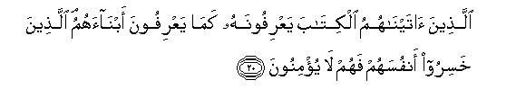
[19-21] Ask them, "Whose testimony is the most reliable?" Say "Allah is witness11 between me and you (that I am His Messenger), and this Qur'an has been revealed to me so that I should thereby warn you and all whom it may reach. What, will you really testify that there are other deities besides Allah?"12 Say, "As for me, I will never testify such a thing."13 Say, "Indeed, He alone is the Deity and I feel disgusted with the shirk you practice." Those, to whom We have given the Book, recognize this with as much certainty as they recognize their own sons.14 But those, who have made themselves liable to perdition, do not believe in this. And, who can be more unjust than the one who brings false allegations against Allah15 or denies Allah's Signs?16 Indeed, such unjust people can never attain to true success.
[22-24] On the Day, when We muster them all together, We shall ask the mushrikin, "Where are now your associates whom you had taken for your deities?" Then they shall not be able to play any other trick (than make this false statement): "We swear by You, our Lord, we were not at all mushrikin." Behold, how they will invent a lie against themselves and how all the false gods, they had forged, will forsake them!

[25-30] There are some among them, who (pretend to) listen to what you say, but they do not understand it, as We have cast veils over their hearts; We have made them hard of hearing (so they are deaf17 to what they hear). Even if they see any Sign, they will not believe in it; so much so that when they come and contend with you, those, who have already made up their minds not to believe (after hearing all), say, "This is nothing but the same old story."18 They forbid other people to believe in this Truth, and themselves turn away from it. (They imagine that in this way they are doing you some harm), whereas they are preparing their own perdition, though they do riot perceive it. Would that you could see their condition at the time, when they will be made to stand before Hell! They will say, "Would that we could somehow return to the earthly life again: then we would not deny the Signs of our Lord, and would join the Believers." As a matter of fact, they will say this because the Reality which they had concealed before this, will have appeared manifest before them.19 But the fact is that even if they were sent back to the earthly life, they would do all that they had been forbidden to do. They are liars (that is why they will give vent to such a false wish). Today they say, "There is no other life than this our worldly life, and we shall never be raised back to life after our death." Would that you could witness the scene, when they will be brought before their Lord: then their Lord will ask them, "Is this not the Reality?" They will say, "Yes, our Lord, this is the Reality." Then He will declare, "Well, taste the torment for denying this Reality."
[31-32] Losers indeed are those who consider it a lie that they will ever have a meeting with Allah. When the Hour overtakes them unawares, they will exclaim, "Alas! how negligent we have been of this matter!" and they will be carrying the burdens of their sins on their backs: behold, how heavy is the burden they are carrying! This worldly life is but a sport and pastime.20 In fact, the abode of the Hereafter is better for those who desire to be safe from harm. Will you not, then, use your commonsense?
[33-36] O Muhammad, We know that what they say, grieves you, but it is not you whom they charge with falsehood; these wicked people are, in fact, denying the Revelations of Allah.21 Many Messengers before you have also been treated as impostors, but they bore with fortitude the charge of imposture and persecution (by the disbelievers), till Our help came down to them. None has the power to change the Law of Allah22 and you have already received the news of what happened to the Messengers before you. However, if you find it hard to bear their aversion, then seek out, if you can, an opening into the earth, or set up a .ladder to the sky so that you may bring them a Sign.23 Had Allah willed, He would have gathered them all on guidance; so do not behave like the ignorant people.24 Only those, who listen to it, accept the Message; as for the dead,25 Allah will raise them from the graves only and they shall be brought back (to be produced in His Court).


[37-41] These people ask, "Why has no Sign been sent down to this Prophet from his Lord?" Say, "Allah is able to send down a Sign, but most of these people do not understand the wisdom underlying it."26 As regards Signs, just have a look at any of the beasts that move upon the earth and at any of the birds that fly in the air: they too are species like you. We have left out nothing in pre-determining the courses of their lives: then ultimately they are all gathered to their Lord. But those, who deny Our Signs, are deaf and dumb, dwellings in many sorts of darkness;27 Allah lets go astray whom He wills and guides to the Right Way whom He pleases.28 Ask them to consider deeply and answer, "When some great misfortune befalls you, or the last hour approaches you, do you invoke any other than Allah? Answer, if you be in the right." At that time you invoke Allah alone: then, if He pleases, He averts the affliction from you, and on such occasions, you forget those whom you had set up as His partners.29


[42-45] We sent Messengers before you to many peoples and afflicted them with calamities and misfortunes so that they might bow down before Us with humility. Why did they not then humble themselves when Our scourge overtook them? Instead of this, their hearts were hardened all the more and Satan made, what they were doing, seem fair to them. After this when they forgot the Admonition that was given them, We opened the gates of every kind of prosperity for them; so much so that they were deeply absorbed in enjoying what was given to them. Then We seized them all of a sudden, and they were in a state of utter despair. Thus the transgressors were totally uprooted, and Allah, the Lord of the universe, be praised (that He uprooted them).
[46-49] O Muhammad, ask them, "Have you ever considered this: If Allah were to take away your hearing and your sight and set a seal upon your hearts,30 is there a deity other than Allah to restore them to you?" Behold! how We present Our Signs before them over and over again, and how they turn away from them in disdain. Say, "Have you also ever considered this: If the scourge of Allah comes upon you suddenly or openly, shall any but the transgressors be destroyed? For We send Our Messengers only to give good news to the righteous people and to warn the evil-doers: then those, who accept their Message and reform their own conduct, will have no cause for fear and sorrow and those who treat Our Revelations as false, shall have to suffer punishment in consequence of their evil deeds.
[50] Tell them, O Muhammad, "I do not claim that I possess the treasures of Allah nor that I know the "unseen", nor do I claim that I am an angel. I only follow the Revelation that is sent down to me."31 Then ask them, "Can the blind man and the seeing man be alike?32 Do you not consider this thing?"
[51-53] And, O Muhammad, admonish with this (knowledge based on Revelation) those, who fear that one Day they shall be brought before their Lord in such a state that they will find none other than Allah (with competent powers) as protector or intercessor: it may be that (by this admonition) they adopt the God-fearing attitude.33 And do not drive away those who invoke their Lord morning and evening and are engaged in seeking His favor.34 You are not in any way accountable for them, nor are they in any way accountable for you: so, if you should drive them away, you shall be counted among the unjust.35 As a matter of fact, in this way We have made some of them a means for testing the others,36 so that, seeing them, they should say, "Are these the people from among us upon whom Allah has showered His blessings?" Yes: does not Allah know His grateful servants better than they?
[54-55] When those, who have believed in Our Revelations, come to you, say to them, "Peace be upon you: your Lord has prescribed for Himself mercy and compassion. (It is His compassion that) He forgives and treats with leniency anyone who commits an evil through ignorance and then repents and mends his ways."37 In this way, We make Our Signs clear and plain so as to expose the way of the guilty ones.38
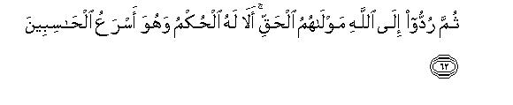
[56-62] O Muhammad, say, "I have been forbidden to worship those, whom you invoke beside Allah. " Say, "I will not follow your wishes for if I did that I should have gone astray, and would not be of the right guided. " Say, "I take my stand on a clear proof from my Lord, and you have rejected it. Now, that which you demand to be hastened is not in my power,39 for Allah alone has the sole authority of passing judgment: He declares the Truth and He is the best of arbiters" . Say, "Had I the power to hasten that which you are demanding, the dispute between you and me would have been settled long before this, but Allah knows best how to deal with evil-doers. He alone has the keys of the "unseen", of which none has the knowledge but He. He knows all that is in the land and in the sea; there is not a leaf that falls from a tree but He knows about it; there is not a grain in the darkest bowels of the earth of which He is not aware; everything fresh and dry has been recorded in an open Book. It is He Who recalls your souls at night and knows what you do during the day; then next day He returns you to your usual work to complete the fixed term of your life. At long last, you shall all return to Him and He will let you know what you had been doing. He reigns supreme over His servants and appoints those, who keep watch over you40 till the time the death of anyone of you approaches; then the angels sent by Him take away his soul and do not show the least negligence in the performance of their duty. Then all are brought back to Allah, their real Master. Beware of it that the sole authority of passing judgment rests with Him alone and He is the swiftest at reckoning."
[63-64] O Muhammad, ask them, "Who rescues you from perils in the darkness of the land and sea? Who is He Whom you implore humbly and invoke secretly (at the time of affliction)? To whom do you make this promise: `We will be grateful if you rescue us from this affliction'." Say, "Allah delivers you from that and every other affliction; yet you associate other partners with Him."41
[65-67] Say, "He has the power to bring a scourge on you from above you or from beneath your feet or to split you into discordant factions to make you taste the violence of one another. " Behold! how We present Our Signs over and over again in different ways before them so that they should understand the Reality.42 Your people are rejecting it (the Qur'an), although it is the Truth. Say, "I have not been made a supervisor over you.43 Every event takes its prescribed time to appear; and, by and by, you yourselves shall see the consequences."
[68-70] And, O Muhammad, when you see that people are finding fault with Our Revelations, withdraw from them till they get engaged in some other talk; and, if ever Satan causes you to forget this,44 quit the company of such unjust people when you realize your mistake. Though the pious people are not in any way accountable for them, yet it is their duty to admonish them; perhaps they may refrain from their evil ways.45 And leave alone those who have taken their faith as a sport and pastime and have been deluded by the life of this world; nevertheless, go on admonishing them by reciting the Qur'an to them lest any person should be seized because of his own deeds, and that too at the time, when there would be no protector, no helper and no intercessor to rescue him from Allah, and when no conceivable amount of ransom would be accepted from him; this is because such people shall be seized in consequence of what they themselves had earned; they shall get boiling water to drink and a painful torment to suffer for their rejection of the Truth.
[71-73] O Muhammad, ask them, "Should we invoke, instead of Allah, those, who can neither benefit us nor harm us? And should we turn upon ow heels after Allah has shown us the Guidance? Should we put ourselves in the sad plight of the man, whom the satans have misled to wander over the desert in a bewildered state of mind, while his companions are calling aloud, `Come to us: here is the right way'?" Say, "In fact, the right guidance is the Guidance of Allah and He has enjoined us to surrender to the Lord of the universe and establish the Salat and refrain from His disobedience; you shall all be gathered unto Him. It is He Who created the heavens and the earth in all truth,46 and there shall be Resurrection the day He says, "Be." His word is the very truth and on the Day, when the Trumpet47 is blown, His shall be the sole Sovereignty.48 He has full knowledge of the visible and the invisible49 and He is All-Wise, All-Knowing."
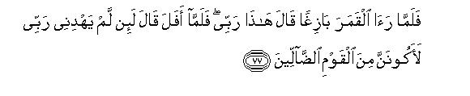

[74-82] And remember the incident when Abraham said to his father, Azar, "Do you take idols for deities?50 I see that you and your people are in manifest deviation." And We showed51 to Abraham the phenomena of the Kingdom of the heavens and the earth in the manner (that follows) so that he may become one of the firm believers.52 Accordingly when the night outspread over him, he saw a star and said, "This is my Lord." But when it set, he declared, "I cannot love those that set." Afterwards when he saw the moon shining, he said, "This is my Lord." But when it also set, he cried, "If my Lord had not guided me, I, too would have been of those who had gone astray." Then, when he saw the sun shining brightly, he said, "This is my Lord. This is the largest of all." But when this also set, he exclaimed. "O my people, I have nothing to do with those whom you set up as partners with God.53 As regards me, I have turned my face in exclusive loyalty and worship towards that Being Who has created the earth 'and the heavens and I am not at all of those who associate partners with Allah." And when his people began to argue with him, he said to them, "Do you argue with me in regard to Allah, whereas He has shown Guidance to me? And I do not fear those whom you have taken for gods: except that it be my Lord's will, for if my Lord wills anything it must happen. The knowledge of my Lord embraces everything. Will you not, then, remember this and come to your senses?54 And there is no reason why I should fear those whom you have made partners with Allah, when you are not afraid of setting up those things as partners in Godhead for which He has sent no authority to you. Then tell me, if you have any knowledge: which of the two parties merits peace and freedom from fear? As a matter of fact, they alone, who have believed and not polluted their Faith with shirk,55 have peace and are rightly guided."
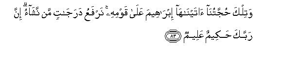
[83] This was Our argument which We bestowed upon Abraham against his people. We raise whom We will to exalted ranks; indeed your Lord is All-Wise, All-Knowing.
[84-87] Then We bestowed upon Abraham descendants like Isaac and Jacob, and showed each of them the Right Way, (the same Right Way that) We had shown to Noah before them; and (We bestowed Guidance upon ) David, Solomon, Job, Joseph, Moses and Aaron from among his descendants. Thus, We reward the righteous people for their good deeds. And (from among his descendants, We showed Guidance) to Zachariah, John, Jesus, and Elias, each of whom was an upright man. And (We showed the Right Way) to Ishmael, Elisha, Jonah and Lot (who were his offspring). And We exalted everyone of them over all the people of the world and showed favors to many of their forefathers and their descendants and their brethren and chose them for Our service and guided them aright.
[88-90] This is Allah's Guidance by which He guides anyone of His servants He pleases: but if any of His people had ever practiced shirk, all the good deeds they had done would have been rendered vain.56 Such were the people on whom We bestowed the Book, the Judgment and the Prophethood.57 Now, if these people do not believe in it (it does not matter); We have bestowed this favor upon others who are not ungrateful to it58 - O Muhammad, those were the people who were rightly guided by Allah; so you should also follow their way and say, "I ask no recompense from you for showing this (Guidance); this is an admonition to all the people of the world."
[91-94] Those people formed quite a wrong estimate of Allah, when they said,59 "Allah has not sent down anything to any man." Ask them: "Then who sent down the Book, which Moses brought: which was Light and Guidance for mankind: which you have divided into fragments, a part of which you show to the people and most of it you hide from them: by which you were given that knowledge which neither you nor your forefathers possessed?"60 -- Just say, "Allah", and then leave them alone to play with their useless arguments. (Like that Book) this is a Book which We have sent down; it is a blessed Book, it confirms that which was sent down before it, and this has been sent down so that you should warn the people of this central place (Makkah) and those who dwell around it. Those, who believe in the Hereafter, believe in this Book, and observe their prescribed Prayers punctually.61 And who could be more wicked than the one who invents a falsehood about Allah or says, "A Revelation has come to me," whereas no Revelation has come to him, or says, "I will also send down the like of what God has sent down?" Would that you could see these wicked people, when they are in the agonies of death, and the angels are out-stretching their hands and saying, "Come, yield up your soul; today you shall be awarded a disgraceful torment for the false things you attributed to Allah and for the rebellion you showed against His Revelations." (And Allah will add,) "So, you have come before Us all alone, as We created you at first. Now, you have left behind all that We gave to you in the world; and now We do not see with you those intercessors who, you believed, had a share in molding your destinies: all the relations between you have been cut off, and all those, in whom you trusted, have left you in the lurch."
[95-96] Allah is the splitter of the seed grain and the fruit stone;62 it is He Who brings forth the living from the dead and the dead from the living.63 It is Allah Who does all these things: where, then, are you being misled? He causes the dawn to appear out of the curtain of the night; it is He Who has ordained the night for rest and determined the time of the rising and the setting of the moon and the sun: all these things have been determined by the same All Powerful and the All Wise One.
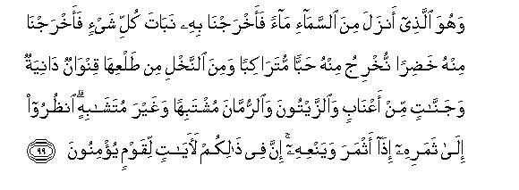
[97-103] And it is He Who has set up the stars for you so that you may find your way in the deep darkness of the land and sea. Behold! We have made Our Signs clear for those who possess knowledge.64 And it is He Who created you from one single soul65 and provided for each of you a dwelling place and a repository. We have made these Signs clear for those who are men of understanding66 And it is He Who sent down rain-water from the sky and thereby caused every kind of vegetation to grow, and then with it produced green fields and trees and from them brought forth close growing grain and from the blossoms of palm-trees brought forth laden sheaths of clustering dates and vineyards and olive groves and gardens of pomegranates : though their fruits resemble each other yet each has its distinctive quality. Behold how they bring forth fruit and how their fruits ripen. for there are indeed Signs in these things for those who believe. Yet they set up the Jinn as partners with Allah,67 whereas He is their Creator; they have also invented for Him sons and daughters without having any knowledge68 whereas He is absolutely free from and exalted far above the things they say. He is the Originator of the heavens and the earth: how should He have a son, when He has no consort? He has created everything and He has the Knowledge of everything. This then is, Allah, your Lord; there is no deity but He is the Creator of everything : so worship Him alone, for He is the Guardian of all things, No sight can comprehend Him but He comprehends all sorts of sight, for He is All-Comprehensive and All-Aware.
[104] Behold: Lights of discernment have come to you from your Lord: now, whoever makes use of his sight, will do so to his own good, and whoever behaves like a blind person will do so to his own harm; I am not a keeper over you.69
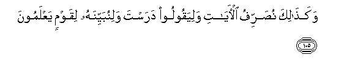
[105-108] Thus do We state Our Revelations over and over again indifferent ways so that the disbelievers might say, "You have learned these (not from Allah but) from someone else;" and so that We may make the Reality plain to those who have knowledge.70 Therefore, O Muhammad, go on following what has been sent down to you from your Lord, for there is no god besides that One Lord, and leave these mushrikin alone. Had Allah willed (He Himself could have so arranged that), they would not have committed shirk. And We have not appointed you a keeper over them, nor have you been made their guardian.71 And (O Believers), do not revile those whom they invoke besides Allah lest they should, in their ignorance, revile Allah72 (besides committing shirk). We have thus made the deeds of every people seem fair to them.73 Ultimately, they shall have to return to their Lord; then He will let them know what they have been doing.

[109-113] They declare with solemn oaths by Allah that if a Sign74 (i.e. a miracle) comes before them, they will believe in it (your Prophethood). O Muhammad, tell them, "Allah alone can show Signs."75 And what will make you (O Muhammad) realize that, even if the Signs come, they would not believe?76 And We are turning away their hearts and eyes from the Truth because of that attitude of theirs which prompted them to disbelieve in the first instance,77 so We leave them to wander about in their rebellion. Even if We had sent down angels to them and made the dead to speak with them and ranged all the things of the world before them (as a proof thereof), they would still not have believed unless it were Allah's will that they should believe,78 but most of them talk nonsense. And so have we always set against every Prophet enemies from among satans of men and satans of jinns who have been inspiring one another with charming things in order to delude the minds.79 But, had your Lord willed, they would never have done so.80 So leave them alone to continue their false allegations. (We have been allowing them to do all this) so that the hearts of those who do not believe in the Hereafter might be allured (by this charming delusion) and they be well pleased with it, and that they might earn the evils they wish to earn.
[114-115] This being so, should I seek a judge other than Allah. whereas He has sent down to you the Book with full details?81 And the people whom We gave the Book (before you) know that this Book has been sent down to you with the Truth from your Lord; so you should not be of those who have doubts82 The Word of your Lord is perfect in regard to Truth and justice; there is none who can make any change in His decrees for He hears everything and knows everything.
[116-117] And O Muhammad if you obey most of the dwellers of the earth, they will lead you astray from Allah's Way, for they follow nothing but guess-work and indulge in mere conjectures.83 In fact, your Lord knows best those who have gone astray from His Way and also He knows those who are on the Right Path.
[118-119] Then you should eat the flesh of the animal over which Allah's name has been mentioned, if you sincerely believe in His Revelations.84 And why should you not eat that thing over which Allah's name has been mentioned when He has already given you explicit knowledge of those things which He has forbidden for you, except in a case of extreme helplessness?85 as As regards the majority of the people, they, following their caprices, say misleading things without any knowledge. Your Lord best knows these transgressors.
[120-121] And refrain from open sins as well as secret sins: surely those who earn sin shall get the recompense of what they have earned. And do not eat the flesh of the animal over which Allah's name has not been mentioned at the time of slaughter; this indeed is sinful. The satans put doubts and objections into the minds of their friends, so that they should dispute with you,86 but if you obey them, you are surely mushrikin.87
[122-123] Can that person, who was first dead, then We gave him life88 and bestowed upon him the light by which he is able to walk on the right way among the people, be regarded like the one who is blundering about in deep darkness89 and will not come out of it? Thus have been made seem fair90 to the disbelievers their deeds and thus have We placed in every habitation the ringleaders of the wicked people to spread the snare of their vile schemes; in fact, they themselves get entangled in the snare of their vile devices but they do not perceive it.
[124] When a Revelation comes before them, they say, "We will not believe in it unless we are given the like of what has been given to the Messengers of Allah."91 Allah knows best whom to entrust with His Mission and how to get it conducted. - Near is the time when these criminals shall meet with disgrace and a grievous torment from Allah for the evil schemes they were devising.
[125-127] So (the fact is that) whomsoever Allah wills to guide aright, He makes his breast wide open to Islam,92 and whomsoever He wills to let go astray, He makes his breast narrow and squeezes it so tight that (at the very idea of Islam) he begins to feel as if his soul were climbing up towards the sky. Thus Allah sets the impurity (caused by their deviation from the Way of Islam) over those who do not believe, whereas this Way is the Straight Way of your Lord, and We have made its signs quite clear for those who are amenable to advice. There is an abode of peace93 for them with their Lord, and He is their Protector because of the good works they are doing.
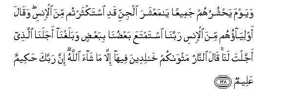
[128-129] On the Day when He will encircle and muster them all together, addressing the jinn,94 He will say, "O race of jinn, you have exploited fully the human race." And their associates from among the human race will answer, "Our Lord, we both have exploited each other fully,95 and now we have reached the end of our term which You had fixed for us." Then Allah will say, "Well! now the Fire is your abode wherein you shall abide for ever." Only those, whom Allah will deliver, shall escape from it. No doubt your Lord is All Wise, All-Knowing.96 Behold, in this way We will make (in the Hereafter) the wrongdoers the comrades of one another because of what they earned (in the world with mutual co-operation).97
[130-131] (On that occasion Allah will ask them this question also:) "O race of jinn and men, did not the Messengers come to you from among yourselves, who recited My Revelations to you and warned you of the consequences you shall meet with on this Day?" They will reply, "Yes, they did. We bear witness against ourselves. "98 Today this worldly life has deluded them, but at that time, they will themselves bear witness against their selves that they were disbelievers.99 (This testimony will be taken from them in order to prove that) your Lord would not destroy the habitations unjustly, while their dwellers were ignorant of the Reality.100
[132-135] The grade of everyone (for recompense) is determined in accordance with his deeds: and your Lord is not unaware of the deeds of the people. Your Lord is All-Sufficient and is full of compassion.101 If He wills, He may remove you and replace you by whomever He wills, just as He raised you from the offspring of other people. Indeed, the thing which you are being promised shall most surely come;102 and you have no power to frustrate Allah. O Muhammad, say, "O people, you may do whatever you like in your own way and I am doing whatever I deem right;103 but you shall soon know who comes out successful in the end; anyhow the fact is that the workers of iniquity can never attain true success."
[136] These people104 have assigned a portion to Allah out of the tillage and the cattle He Himself has created, and say, "This is for Allah," so presume they "and this is for the partners105 we have set up with Him." Then the portion assigned to the partners of their own making does not reach Allah, but that assigned to Allah reaches the partners set up by them.106 What evil decisions they make!
[137] And likewise, those whom the mushrikin believe to have a share in Allah's Godhead have made the killing of their own children seem fair to them107 in order to lead them to ruin108 and confuse them in their religion.109 Had Allah willed, they would not have done so; therefore, leave them busy in their false accusations.110
[138] They say, these cattle and crops are reserved; only those people can eat them, whom we allow. In fact, this is a restriction they themselves have imposed.111 Then there are some animals which have been forbidden for riding and carrying loads, and there are other animals over which they do not pronounce the name of Allah.112 They have falsely attributed all this to Allah113 before long Allah will recompense them for all that they have falsely attributed to Him.
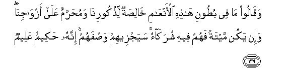
[139] And they say, "Whatever is within the bellies of these cattle is reserved for our males and forbidden to our females, but if it is dead, both may partake of it.114 Allah will surely recompense them for the things they have fabricated; indeed, He is All Wise, All Knowing.
[140] Most surely they became losers, who, in their folly and ignorance killed their own children, and made unlawful what Allah had provided them as sustenance falsely ascribing prohibitions to Allah. Surely they went astray and were not at all rightly guided.115
[141-144] It is Allah, Who has produced gardens of upright trees and vineyards116 and date-palm trees; Who has made the crops to grow, which yield different kinds of edibles; Who has produced olive and pomegranate trees, whose fruits are similar in shape yet differing in taste. Eat of their fruits, when they bear fruit, and give away Allah's due at the harvest time, but do not transgress the limits, for Allah does not like the transgressors. And it is He Who has created from among the cattle, beasts of burden and beasts for riding, and also those whose flesh you eat and whose skins you use for making beds;117 therefore eat of those provisions that Allah has given you and do not follow in the footsteps of Satan for he is your open enemy.118 Here are eight kinds of cattle - males and females. Take first a pair of the sheep family and a pair of the goat family, and O Muhammad, ask them, "Has He of these forbidden you (to partake of) the males or the females or the young ones that are in the wombs of the sheep and the goats? Tell me with knowledge, if you are men of truth.119 Likewise, take a pair of the camel family and a pair of the cow family, and ask them, "Has He of these forbidden the males or the females or the young ones that are in the wombs of the she-camel and the cow?"120 Were you present at the time when Allah prescribed these prohibitory laws? (If not), who can then be more wicked than the one, who invents a falsehood and ascribes it to Allah so that he should, without knowledge, mislead the people? Indeed, Allah does not show guidance to such transgressors.

[145-147] O Muhammad, say to them, "I do not find in what has been revealed to me anything forbidden to an eater to eat except that it be carrion or the blood that has been shed or the flesh of swine, for it is unclean, or flesh of an animal that has become profane because of having been slaughtered in any other name than that of Allah.121 But if one is forced in a case of certain helplessness.(to eat any of these) without any intention of disobedience, and without transgressing the limit of absolute necessity, (he will find that) your Lord is Forgiving and Merciful." And We prohibited to those people, who had adopted Judaism, all animals with claws and the fat of oxen and goats except what is on their backs or their entrails or what sticks to their bones; this was the punishment We had inflicted on them for their rebellion.122 And We are telling the truth. Now if they belie you, say to them, "Your Lord has limitless mercy: but His punishment cannot be warded off from the criminals."123
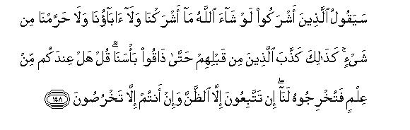
[148-149] (In reply to these things of yours) the mushrikin will surely say, "Had Allah willed, neither we nor our forefathers would have committed shirk, nor would have we made anything unlawful.124 Likewise the people before them had treated the truth as falsehood by such (absurd) excuses until they tasted Our scourge. Say to them, "Have you any knowledge that you can produce before Us in support thereof? You are following nothing but conjecture and making false presumptions." Then say, ("In contrast to your lame excuse,) Allah's argument is conclusive: had Allah so willed, He would surely have shown guidance to all of you."125
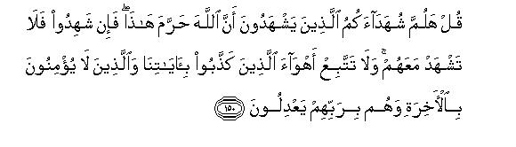
[150] Say to them, "Produce your witness who can testify that Allah has forbidden all this." But, even if they testify, you should not bear witness with them.126 And you should never follow the desires of those, who have treated Our Revelations as false and who do not believe in. the Hereafter and who set up others as equals with their Lord.
[151-153] O Muhammad, say to them, "Come, I will recite what limits your Lord has set for you."127 (He has enjoined:) (1) That you should not set up anything as a partner with Him,128 (2) and you should treat your parents kindly,129 (3) and you should not kill your children for fear of poverty, for We provide sustenance for you and will provide sustenance for them also, (4) and you should not go near indecent things130 whether they be open or hidden, (5) and you should not kill any living being whom Allah has forbidden to kill except by right.131 These are the things which He has enjoined on you: it may be that you use your common sense. And He has enjoined:(6) that you should not go near the property of an orphan except in the best way,'132 until he reaches his maturity.(7) and you should use a full measure and a just balance. We charge one only with that much responsibility that one can bear,133 (8) and whatever you say should be just, even if it is concerning your own relatives,(9) and you should fulfill your covenant with Allah.134 Allah has enjoined these things on you so that you may follow the admonition.(10) And Allah also enjoins: "This way alone is My Right Way; therefore you should follow this Way and should not follow other ways lest they should lead you astray from His Way. 135 This is what Allah has enjoined on you so that you may avoid crooked ways.
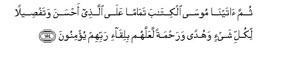
[154-155] Then,We had given to Moses the Book to complete the blessing for those who adopted the righteous attitude; it contained details about all important things, and was a perfect guidance and mercy. (And it had been given to the children of Israel so that) the people might believe in the (ultimate) meeting with their Lord.136 And likewise have We sent down this Book, which is a perfect blessing; so follow this and adopt the God fearing attitude so that mercy may be shown to you.
[156-158] Now you cannot say, "The Book was sent down to the two communities before us,137 and we were unaware of what they studied and taught. " And now you cannot put forward even this excuse: "If the Book had been sent down to us, we would have proved ourselves more righteous than they." Now that a clear proof and Guidance and Blessing, has come to you from your Lord, who can be more unjust than the one who treats Our Revelations as false and turns away from them?138 We will inflict the severest torment on those who turn away from Our Signs because of their aversion. Do the people now wait that the angels should come down before them, or that your Lord may Himself come down, or that manifest Signs139 of your Lord should appear? On the Day when some clear Signs of your Lord will appear, his faith shall not profit the man who did not believe before or who, while professing to believe, did not do good deeds.140 O Muhammad, say to them, "Well, you may wait if you will: We, too, will wait."
[159-160] You have nothing to do with those who have split up their religion and become sects.141 Their case rests with Allah, and He Himself will let them know what they have done. He, who will bring a good deed before Allah, will receive a tenfold reward for it, and he, who will bring an evil deed, shall receive only that much punishment which he deserves, and no one will be treated unjustly.

[161-165] O Muhammad, say, "As for me, my Lord has most certainly guided me on the Straight Way, the ever True Faith, Abraham's Way142 which he had adopted exclusively and whole-heartedly and he was not of mushrikin." And declare, "My Salat and my rites of worship143 and my life and my death, all are for Allah, the Lord of the universe, Who has no partner with Him. This is what I have been enjoined, and I am the first to surrender to Him." Say, "Should I seek another Lord beside Allah when He is the Lord of everything?144 Every person is himself accountable for what he earns, for no bearer of burden bears the burden of another.145 Ultimately, you shall all have to return to your Lord: then He will tell you the reality of that about which you differ. It is He, Who has made you the vicegerents on the earth, and raised some of you above others in ranks so that He may test you in what He has given you.146 Indeed your Lord is swift in inflicting punishment: yet He is also very Forgiving and Merciful."
1It should be noted that the addressees were the mushrik Arabs, who acknowledged that the Creator of the earth and heavens and of the sun and the moon is Allah, who brought about the day and night. None of them believed that these were the works of Lat or Hubal or `Uzza or of any other god or goddess. Therefore Allah admonished them, saying (so to speak), "O foolish people, when you yourselves admit that the Creator of the heavens and earth and of the night and day, is Allah, why do you, then, make others your gods, and prostrate before them, make offerings to them, present your needs before them and invoke them for help`" (Refer to E.N.2 of Al-Fatihah and E.N. 163, Al-Baqarah).
It may be noted that Zulumat (plural of Zu1mat) has been used in contrast to nur (light, singular form). It is because 'darkness is merely the absence of light and may be of many kinds.
2Allah says that He has created man from "earth" because each and every particle of the human body comes from the earth and from nowhere else.
3"The other settled term" is the "Day of Resurrection", when all human beings will be brought back to life and presented before Allah for rendering the account of their life on the earth.
4The reference is to the "news" of the successes that were to follow the emigration of the Holy Prophet to Madinah. At the time of this revelation, neither the disbelievers nor the Believers could ever imagine the nature of the "news" they were going to receive. So much so that even the Holy Prophet himself was unaware of the kind of successes the Muslims were going to achieve in the near future.
5The ignorant objectors argued that if Muhammad (Allah's peace be upon him) was really a Messenger from Allah, an angel ought to have come down from heaven to declare to the people: "This is the Messenger of Allah, so obey him; otherwise you shall be punished".
The ignorant objectors did not understand how the Creator of the heavens and earth could leave His Messenger in such a plight as to be maligned and stoned by his enemies. They argued that the Messenger of such a Supreme Sovereign ought to have come with a large retinue or at least an angel in attendance on him, to protect him from his enemies and to fill the people with awe and to convince them of his Prophethood and to carry out his orders in some supernatural ways.
6The first answer to their objection is that in case Allah had sent down an angel, no respite would have been given them for reforming themselves and mending their ways. They have been given a chance because no angel has been sent to make the Reality so naked as to leave no alternative for them but to believe. It is obvious that this would have defeated the very purpose of their life in the world to undergo their test. That is why no angel has been sent. Man should undergo his test and discover the unseen Reality without actually seeing it, merely by the right use of his reasoning and thinking powers, and then bring under control his own self and its lusts in accordance with the dictates of that Reality. It is thus obvious that the "Unseen" must remain unseen for the sake of that test.
The worldly life, the period of that test, will remain so only as long as the "Unseen" remains unseen. No sooner will the "Unseen" become evident than that "Period" will automatically come to an end, and instead of test, it will be the time of the result of the test. Therefore Allah is not granting your demand for an angel to appear before you because Allah does not like to end the term of your test before the expiry of the period of the test. (Refer also to E.N. 228, Al-Baqarah).
7The only other alternative was to send an angel in human form. Allah says that if He had sent an angel in human form, they would have felt the same difficulty in recognizing him as they were feeling in recognizing Muhammad (Allah's peace be upon him). This, too, would have involved them in doubts. Therefore it was for their own good that Allah had not sent an angel in attendance on His Messenger.
8That is, those, who ridicule the Message, should travel through the land and see the remains, and study the history of the former peoples. These will bear witness to the horrible end of those who behaved in the way they are behaving towards Muhammad (Allah's peace be upon him).
9It is a nice way of cornering the mushrikin. At first Allah tells His Messenger to ask them, "Whose is all that is in the heavens and the earth?" The questioner put the question and waited for an answer. But they kept silent because their answer could neither be in the negative nor in the affirmative. They could not deny this because they themselves believed that `all belongs to Allah.' But they could not affirm this because in that case, they themselves would have supplied the adversary with an argument against their own creed of shirk. After putting them in this critical position, Allah enjoined His Messenger to say, "All belongs to Allah."
10This contains a subtle argument: all those, whom the mushrikin have made their gods besides Allah, stand in need of nourishment from their devotees, not to speak of giving nourishment to them. No Pharaoh can set up his grandeur unless his subjects pay taxes and make offerings to him; no saint becomes worthy of worship, unless his worshipers build a grand mausoleum for him; no god becomes a god unless his devotees make his idol and set it up in a grand temple and decorate it with ornamentation. Thus, all the artificial gods stand in need of their servants. It is the Lord of the universe alone, Who does not stand in need of anyone's help but all others stand in need of Him, and it is His Godhead alone that does not stand in need of any prop from anyone whatsoever, but supports itself.
11That is. "Allah is a witness that I have been appointed a Messenger by Him and whatever I say is from Him."
12Mere guess-work or speculation does not suffice for testifying to anything: none can testify to a thing with certainty without the necessary knowledge about it. The question implies: "Do you really have the knowledge that there is any other Sovereign with authority than Allah, Who is worthy of service and worship?"
13That is, "You may, if you so like, give false testimony without any knowledge, but, as for me, I cannot give such a testimony."
14It means that those, who possess the knowledge of revealed Books, know it for certain that there is only One God, Who has no partner in His Godhead. Therefore they can discern the right creed about Allah from among many different kinds of other creeds' and theories about Godhead, just as any person can identify his own child from among many thousands of other children.
15"False allegation" is the claim that there are many other partners with Allah in His Godhead who have divine attributes and powers and are thus worthy of worship. It is also false to allege that Allah Himself has made such and such His special courtiers and has enjoined (or at least approved) that Divine attributes should be ascribed to them and that they should be treated with reverence, like Allah.
16"Allah's Signs" are all those signs that point to the fact that there is only One God in the universe and that all others are His servants. These signs are spread all over the universe. They are found in the person of man himself and in the character and the great achievements of the Prophets and in the revealed Books. That is why the one, who, in the presence of all these "Signs," ascribes Divine attributes to others and considers them worthy of Divine rights, is in fact guilty of gross iniquity. It is indeed a great injustice that one should ascribe such Divine attributes to others without any evidence, knowledge, observation and experience merely on the basis of guess-work or the traditions of the forefathers. As a result of this false creed, he does injustice to Truth, to Reality, to his own self and to everything and everyone he deals with in this universe.
17Here Allah has ascribed to Himself the cause of the defects produced in their faculties of understanding, hearing and seeing, for everything that takes place in the world under the Natural Law does, in fact, take place by the command of Allah because He is the Author of that Law. Therefore the resultant effects of the working of that Law, in fact, take place by the will and order of Allah. The obdurate disbelievers do not understand, do not hear and do not see the Truth, even though they seem to listen to the Message of the Messenger, because their obduracy, their prejudice and their unwillingness have, according to the law of Nature, dulled their faculties. The law is that if one is bent upon obduracy and does not adopt the attitude of a righteous person, all the doors of his heart automatically get locked against every kind of trth that goes against his lusts. When this natural process is described in the human language, it will be said, "The doors of the heart of such and such a person are locked." But God, without Whose Command and Leave nothing whatsoever can happen, will describe the same like this, "We have locked the doors of the heart of such and such a person." This is because a human being will describe the thing as it seems to happen, whereas Allah states the true nature of the happening.
18This is the excuse that the foolish people put forward for rejecting the Message. They say, "There is nothing new in the Message towards which the Messenger is inviting us. This is the same old Message that we have been hearing before." According to these foolish people, in order to be true, a Message must also be new because according to them that which is old cannot be we. Whereas the fact is that the Message has always been one and the same and will ever remain so. The Messengers of Allah, who had been coming from the earliest times for the guidance of mankind, have always been communicating the same Message; likewise, the Holy Prophet was also presenting the same old Message. Of course, only those, who being devoid of Divine Light, cannot see the aforesaid eternal reality, might invent something new and by forging some theories present them as truth, saying, "We have a new Message, which has never been given by anyone before us."
19Their desire, that, if they could return to this world again, they would believe in the Message, will not be the outcome of any right thinking and reasoning or any real change of their hearts and minds, but will be the result of witnessing the Reality after which even the most obdurate disbeliever dare not deny it.
20This does not mean that the life in this world is not real and earnest and has been created merely for sport and pastime without any serious purpose. What it means is that compared with the everlasting life in the Hereafter, the short transitory life in this world is like sport and pastime, which are diversions from serious work, to which one has to return after recreation. Moreover, this worldly life has been likened to sport and pastime, because here are many things of deceptive appearances that are liable to involve in misunderstanding those people, who lack common-sense and vision, and help them assume false positions so as to make life mere sport and pastime. For instance, the role of a ruler in this worldly life is, in fact, not any different from that of an actor who plays the role of a king on the stage, wears a crown and gives commands which are obeyed like those of a real king; whereas, in fact, he has no powers of a real king and is deposed, imprisoned and killed by the order of the director; likewise many other such dramas are being performed on the stage of this world day and night all around us. There is `the court' of a `saint' or a goddess, where the needs are being "fulfilled", whereas, in fact, that `court' has no such power. Then there is another actor who performs the feats of divining the unseen and the future; whereas, in fact, none possesses such knowledge. Still another poses to be the nourisher of others, when in fact, he himself stands in need of obtaining provisions from others. There is still another who poses as if he has the power of bestowing honor and benefit or of inflicting disgrace and loss and behaves arrogantly as if he were the absolute master of all around him. In fact, he himself is utterly powerless and helpless, for a little turn of fortune can dethrone him from the high pedestal of greatness to the lowest depths of disgrace. So much so that he might even be at the feet of those very people, over whom he was ruling as a despot. All these dramas that are being played on the stage of life are abruptly brought to an end by death. Then everyone will cross over to the other world and see for himself everything in its true color; then all the misunderstandings of the life of this world shall be removed and everyone will be shown the real worth of what he had earned for the Life-after-death
21The fact is that all the people of his tribe regarded the Holy Prophet Muhammad (upon whom be peace) truthful and honest up to the time he had not begun to recite the Revelations of Allah before them. They falsified him only when he began to deliver to them the Message of Allah. Even then, there was none who dared charge Muhammad, the Man, with falsehood; nay, even his bitterest enemies never accused him of having ever told a lie concerning any worldly matter. It was Muhammad, the Prophet, whom they charged with falsehood. So much so that even Abu Jahl, who was the bitterest of all his enemies never accused him of falsehood. According to a tradition related by Hadrat 'Ali, Abu Jahl himself declared during a conversation with the Holy Prophet, "We do not call you a liar; but regard as false what you are presenting. " On the occasion of the Battle of Badr, Akhnas bin Shariq asked Abu Jahl in private, "There is no third person here besides us two. Tell me the truth whether you regard Muhammad as a truthful man or as a liar." He answered, "By God, Muhammad is a truthful person and has never told a lie in his life, but if Bani Qusayy, who have already the privilege of being the bearers of the national flag and the providers of water to the pilgrims and the keepers of the keys of the Ka bah, should also be acknowledged as the recipients of Prophethood, what would then be left for the rest of the Quraish?" For this very reason Allah is comforting His Prophet, saying, "It is not you whom they are rejecting as an impostor but it is Our Message which they are rejecting; when We are forbearing everything and giving them respite after respite, why should you show any kind of anxiety'?"
22The "Law" referred to here is the Law of Allah concerning the conflict between the right and the wrong. According to this Law, it is essential that the righteous should be tried for along period to stand their test in order to prove their fortitude, their righteousness, their spirit of sacrifice and their fidelity, their limn belief in their Faith and their complete trust in Allah. For this they must pass through afflictions and hardships in order to develop those high moral qualities which can be learned only by going through this hard and tough course, for with these weapons alone, they are required to win the battle against falsehood. When, according to this Law, they prove their competence, then will Allah's help come at the right moment to support them and this help cannot be brought about before its time by anyone.
23Whenever the Holy Prophet felt that his people did not accept the Message in spite of his continuous preaching, he cherished the desire that Allah Might send such a clear Sign that they should have no alternative left but to accept his Message. In this verse Allah has admonished His Messenger against cherishing any such desire, so as to say, "Do not show impatience at their obduracy, but go on performing your mission persistently in the way and order We are laying down for it. If this mission had to be performed by means of miracles, could We not Ourselves have done so? But We know that this method is not suitable for bringing about that intellectual and moral revolution and for the establishment of that righteous society for which you have been appointed a Messenger. If, however, you cannot endure the heart-burning caused by their indifference and rejection and if you imagine that a tangible Sign, that might appeal to them, is required to break this inert state of their minds, then you should yourself try to bring about such a Sign: you may, if you can, go deep down into the bowels of the earth or ascend up to the heavens for this purpose, but you should not expect from Us that We would fulfill this desire of yours, for there is no room for it in Our scheme."
24This is to impress that it is not the purpose of Allah that all human beings should be forced to accept the Guidance somehow or other. Had it been so, He would have created them in such a way that they would have been righteous by birth like angels. Then there would have been no need of sending the Prophets and the Books and of making the Believers enter into a conflict with the disbelievers for the gradual establishment of the Way of Allah. But Allah does not desire this. On the contrary, He intends that the Truth should be presented to the people in a rational way so that those, who are convinced of it, may adopt it without any coercion, and then mold their characters in accordance with it to prove their moral superiority over the disbelievers. In this way they would go on attracting the best among the people towards it till they succeeded in establishing the Way by virtue of their high ideals, best principles of life, pure characters and strong arguments and with resolute struggle with the disbelievers. Then Allah assures them of the guidance and help they need and deserve at any stage. But if one wishes that, instead of this natural process, Allah should adopt some supernatural method and eradicate false ideas from the minds of the people and bring in pure ones instead and establish the righteous civilization in place of the evil ones, he should know that Allah will not do this for this will be against the wisdom of the scheme of His creation of Man. He has created Man as a responsible being granted him powers to exploit the things of the world and given him the freedom of action-both good and evil-and granted him a definite term for the preparation of the test and fixed the time for the declaration of the result of the test to punish or reward him according to his efforts.
25"Those, who listen to it... " are the people whose conscience is alive, who try to judge rationally between right and wrong, and who do not deliberately and obdurately lock the doors of their hearts. "Those who are dead..." are the people who blindly follow a way and are not ready to leave it and follow any other way even though that may manifestly be the Right Way.
26''Sign" means a tangible miracle. Allah says that the reason why he is not showing a Sign is not that He is unable to do so but for another reason whose wisdom they do not understand. (See E.N. 6).
27That is, "If you are really serious in your demand of seeing a Sign in order to judge whether the Message of this Prophet is true or false, you should see and ponder over the innumerable Signs that are found in abundance all around you. For instance, if you consider animal life, you will see that the structure of the bodies of each species of birds and beasts suits its functions immensely well; the qualities and characteristics that have been ingrained in its nature help to fulfill all its needs; the provision of its nourishment has been arranged in a wonderful way; and the course of its life has been so predetermined that it cannot transgress its limits in any way whatever. Allah also sees that each and every animal, nay, even the smallest insect, is being looked after, protected and guided, wherever it be, for the performance of the functions pre-destined for it. In short, you will find that its structure suits it well; it has been given inherent powers that help provide its needs: excellent provisions have been made for its food. The process of its birth, procreation and death has been going on according to a regulated fixed scheme. If you give a careful consideration to this Sign alone, you will realize that the teachings of this Prophet about the Oneness of God and His attributes and the way of life based on these to which he invites you are absolutely we. Yet you neither try to see with open eyes these Signs nor listen to the Message this Prophet is conveying to you. As a result, you have been involved in ignorance and, therefore, desire to see some wonderful miracle for mere pastime. "
28This is how Allah lets them go astray: (1) He holds back the opportunity for observing His Signs from the one who chooses to remain in ignorance; (2) He keeps hidden the pointers to the Reality from the one who is a victim of prejudices, even though he should see His Signs, and lets him remain involved in misunderstandings and move farther and farther away from the Reality. On the contrary, He guides the seeker after truth to the Right Way by affording him the opportunity to make use of his knowledge for the purpose of discovering the Reality, and showing him the signs guiding towards it. We daily notice instances of these types. There are millions of people before whose eyes countless Signs are spread in their own persons and in the universe, but they see them like animals and do not learn any lessons from them. Then there are the physicists, chemists, zoologists, botanists, biologists, geologists, astronomers, physiologist, anatomists, historians, archaeologists, social scientists, etc., who observe such Signs as may enlighten the minds and the hearts with Faith, but they seem to see no "Sign" to lead them to the Reality, just because they begin their study with prejudiced minds, merely for the sake of material gains. Not only this, but every Sign leads them to atheism, disbelief, materialism and nature worship. In contrast to them, there are those, who observe the wonders of the universe and the phenomena of Nature with open eyes and open hearts, and find the Signs of God all round them: SO much so that they can see His Sign in each and every green leaf.
29In answer to the demand of the disbelievers for a Sign, they were told that there was not one Sign, but innumerable Signs scattered all around them and their attention has been drawn in v. 38 to study the mystery of the life of any bird or beast and they would find Sign of God. Now in v. 40-42, they have been directed to another Sign that they can fmd in their own selves. When some affliction befalls a man or death confronts him with all its dreads, then he sees no refuge in any other than Allah. On such occasions even the most confirmed polytheists forget their gods and invoke Allah's help. Likewise the most obdurate atheists, in their utter helplessness, involuntary pray to Allah for rescue, this Sign-man's own state of mind is being presented here as a pointer to the Reality, for this is a clear proof of the existence of One God, and of the urge of God-worship that has been embedded deep in the heart of every human being. Though it might have been kept suppressed by negligence and ignorance, sometimes it comes to the surface under the stimulus of some misfortune.
Ikrimah, son of Abu Jahl, who was an arch enemy of Islam, was led towards Islam by witnessing such a Sign. When the Holy Prophet conquered Makkah, 'Ikrimah fled to Jaddah and sailed for Abyssinia. During the voyage, there came a furious storm which threatened to sink the boat. At first the passengers began to invoke their gods and goddesses for help. But when the storm became so violent that they feared that the boat was going to sink. they all cried out, "This is not the time to call any open except Allah, because He alone can save us. " This opened the eyes of `Ikrimah and the locked doors of his heart: "If there is none here except Allah to help us, how can there be any to help us in any other place? This is what Muhammad (Allah's peace be upon him) has been teaching us for the last twenty years any we have been fighting it out with him". That as the most decisive moment in the life of `Ikrimah. He made a solemn pledge with Allah to this effect: "If I escape from this storm, I will directly go to Prophet Muhammad Allah's peace be upon him) to become a follower of his." Allah rescued him from that storm and he fulfilled his pledge. He not only became a Muslim, but spent the rest of his life in the service of Islam by performing Jihad.
30"... and set a seal upon your hearts" means" ...deprive you of the powers of thinking and understanding.
31This verse removes the silly notions about Prophethood and answers the absurd objections raised against the claim of Prophethood by Muhammad (Allah's peace be upon him). The foolish people have always had the silly notion that a Prophet of Allah must be supernatural and capable of performing wonderful miracles. For instance, they expected that a whole mountain should turn into a mass of gold at his bidding: that the earth should throw out treasures by his orders: that he should be able to tell the people all about their past and future: that he should be able to locate a lost thing and foretell whether a sick person will get well or die and whether a pregnant woman will give birth to a male or a female. They also believed that such a person should be above the common human limitations. They could not conceive anyone to be a prophet, if he suffered from hunger or thirst and needed sleep, or, if he had wife and children and went to the bazaar to buy and sell the necessities of life, or, if he was sometimes forced to borrow money or was involved in poverty and indigence.
When Muhammad (Allah's peace be upon him) put forward the claim that he was a Messenger of Allah, his contemporaries wanted to test his claim with the touch-stone of such silly notions. They would ask him questions about the unseen things and demand supernatural miracles from him. They would also raise the objection that he was merely a common man, who needed food and drank water like them: who had wife and children and who moved about in the bazaars. In answer to these things, Allah told His Prophet to inform them that he never claimed to be supernatural; his only claim was that he was following the Revelations he received from Allah and that he should be judged by that standard only.
32The question is meant to bring home to them this fact: "I have seen with my own eyes and experienced directly the realities I am presenting to you, and I have gained their accurate knowledge through Revelation; therefore my evidence is that of an eye witness. On the contrary, you are blind with regard to those realities: all your notions concerning them are based on guess-work and speculation or on the blind following of others. Therefore the difference between you and me is the same as of the man who is able to see and the one who is blind. That is what gives me superiority over you and not that I possess the treasures of God or have the knowledge of the unseen or that I am free from the common human limitations."
33That is, "You should pay special attention only to those who believe that One Day they shall have to go before Allah to render an account of their deeds and who do not cherish any such false hopes that somebody's intercession and help will save them. It is because this "Admonition" can produce good effect only on such people and not on those who are so absorbed in the enjoyment of the pleasures of this world that they never think of their death or of going before Allah. Likewise, this "Admonition" will fall flat on those who are making merry in this world, deluding themselves into believing that no harm will come to them in the Hereafter because of their `spiritual' relation with such and such a saint or because such and such a holy person will intercede with Allah in their behalf or because such a one has already made atonement for them. Obviously, no admonition can be beneficial to such people."
34In this passage Allah has answered one of the objections that me big chiefs of the Quraish used to raise in regard to the followers of the Holy Prophet. They would say that none but the lowest stratum of society, consisting of slaves, menials and the like, had accepted Islam: they would taunt him of having such companions as Bilal, `Ammar, Suhaib, Khabbab, etc., and ask in a jeering way, "Are these the only (honorable) people from amongst us, upon whom Allah has showered His blessings?" They did not rest content with making fun of their poor condition, but also passed stinging remarks about their past shortcomings, saying. "Just have a look at the past history of such and such people, who are today forming the "pious" group of the believers." Allah has advised His Prophet not to be disheartened by their unkind remarks.
35That is, "If they had done something wrong in the past, they themselves shall be accountable for it and not you, for everyone shall get the reward of the good or evil one has done. Therefore, no good deed of yours will be put to their credit, nor will you be burdened with any evil deed of theirs. They come to you merely as seekers after truth and it will be injustice to look down upon them and drive them away."
36That is, "By bestowing the blessing of Islam at the outset on the poor and indigent and those who held a low position in society, We have involved the upper rich and proud class in trial."
37Allah has told his Messenger to console those of His followers who had committed heinous sins during the days of "ignorance" by inspiring them with the assurance that He forgives and treats leniently those who repent and mend their ways and, therefore, the taunts of the enemies of Islam need not worry them about what they had done in the past.
38In order to understand the significance of v. 55, we should keep in view v. 37 in which the disbelievers asked, "Why has no Sign been sent down to this Prophet from his Lord?" In the subsequent passage (vv. 38-54) several manifest Signs have been cited to show that there is no lack of Signs but the disbelievers do not want to see them. Then in v. 55 such people have been warned, as if to say, "In this way We make Our Signs clear, plain and manifest so that those, who persist in their disbelief inspire of those Signs, should prove themselves to be guilty ones. For they choose the way of deviation deliberately, not because there is a lack of Signs to show the Right Way but because they do not want to see the Signs."
39This alludes to the demand of the opponents for the scourge of Allah with which they were being threatened. They said, "Why does a scourge not come down upon us, when we are openly denying and defying you? If you have been really sent by Allah, then anyone, who denied and insulted you, would have been swallowed by the earth or stricken dead by lightning. How is it that the Messenger of Allah and his followers are undergoing untold afflictions and sufferings, while their tormentors are enjoying their lives merrily?"
40Angels who keep strict watch over each and everything a man does or thinks of and maintain a complete record of all this.
41That is, "You yourselves are a witness that Allah alone is All-Powerful: He alone has the sole authority and your prosperity and adversity wholly lie in His power and He alone is the maker of your destinies. That is why you turn to Him in your affliction, when you find that no other means of rescue has been left for you. In the face of this clear Sign, you have set up, without any reason or rhyme, others as partners in His Godhead. You live on His provisions but treat others as your providers: you get help from Him in your need, but set up others as your helpers and protectors: He rescues you from your distress, yet you regard others (besides Him) as your rescuers: it is He Whom you humbly invoke in your affliction, yet you take your offerings to others when he removes it. In short, you witness the proofs of His Godhead, day and night, yet you serve and bow down before others.
42It is a warning to those who had become very bold in their enmity with the Truth because no scourge from Allah was in sight. They are being warned that the scourge of Allah does not take long to come. A gust of wind can destroy them all at once. A sudden shake of an earthquake can sink their Habitations under ground. A spark can set on fire the magazines of enmity and involve clans, nations and countries in endless blood feuds. Therefore, "If no scourge is coming on you, this should not make you so bold and neglectful as to go on treading blindly the way you are following without discerning whether it is right or wrong. Instead you should take advantage of the respite that is being given and of the Signs that are being presented to you and recognize the Reality and follow the Right Way."
43That is, "It is no part of my duty to make you see what you would not see and to make you understand what you would not understand; nor am I responsible for bringing down a scourge on you, if you would not see or understand it. The only duty that has been assigned to me is to make plain to you the distinction between Truth and falsehood. Now that I have done my duty and you have rejected the Truth, the evil consequences of which I have been warning you will appear in due course."
44That is, "If you ever forget this instruction and keep sitting in the company of such people."
45Here very important practical instructions have been given to the pious people. Their first and foremost duty is to save themselves from any disobedience of Allah; they should not worry unnecessarily about the disobedient people, for they are not responsible for their disobedience. They should not, therefore, impose it upon themselves as an obligation that they have to convince them anyhow by argument and to refute their absurd objections. Their only duty is to present the Truth before them. Then, if they do not accept it, the pious people should not waste their time and energy by entering into useless polemical disputes, discussions and argumentations with the disbelievers. Instead, they should spend their time and energy in educating and training and reforming those who are sincere seekers after the Truth.
46Here very important practical instructions have been given to the pious people. Their first and foremost duty is to save themselves from any disobedience of Allah; they should not worry unnecessarily about the disobedient people, for they are not responsible for their disobedience. They should not, therefore, impose it upon themselves as an obligation that they have to convince them anyhow by argument and to refute their absurd objections. Their only duty is to present the Truth before them. Then, if they do not accept it, the pious people should not waste their time and energy by entering into useless polemical disputes, discussions and argumentations with the disbelievers. Instead, they should spend their time and energy in educating and training and reforming those who are sincere seekers after the Truth. grand purpose behind it. It must, therefore, come to an end at the appointed time and then be resurrected so that the Creator may take account of all that has been done in it and ultimately build the Next World on the results of that reckoning.
That this world has been created for a purpose has also been mentioned at other places in the Qur'an in different ways:
(a) "Lord, You have not created all this in vain....." (Al-`Imran, III: 91).
(b) "We have not created the heavens and the earth and all that is between them for mere fun." (Al-Anbiya', XXI: 16).
(c) "Do you think that We have created you without any purpose and that you will never be brought back to Us?" (AI-Mu'minun, XXIV: 115).
(2) The whole universe has been built on the solid foundations of the Truth. Everything in it is based on just, wise and right laws and there is no room for injustice and folly and falsehood to take root and bear fruit in it. One should not, however, be misled by the partial and temporary successes of falsehood. At times Allah may allow the worshipers of falsehood opportunity to try their worst for the success of falsehood and injustice and wrong ways in order to show that all their efforts shall ultimately fail and every worshiper of falsehood will see at the Last Reckoning that all the efforts made for the success of this unholy cause had gone utterly waste.
(3) Allah has created the universe in truth and is ruling over it by His own personal right. He wields authority here because of His personal right as its Creator; one should not, therefore, be misled by seeing others holding authority over the affairs of the world. In fact, no one has, nor can have, any right to rule here, for no one has any right whatever over anything in the universe.
47It is beyond our comprehension to understand the real nature of the blowing of the Trumpet. What we learn from the Qur'an is that on the Day of Resurrection when the first Trumpet shall be blown by the Command of Allah, everyone and everything shall perish. Then after this (Allah alone knows how long after this) the second Trumpet shall be blown; then everyone from the beginning of the creation to its end, shall be brought back to life and mustered in the Plain of Resurrection. In short, on the first blowing of the Trumpet, the present system of the universe shall be destroyed and on its second blowing the new system, different in form and with different laws, shall be created.
48It does not mean that today Sovereignty is not His. What it means is this: "On that Day the curtain, that is covering the Reality today, will be lifted and it will become apparent that all those who seemed to wield authority or were supposed to wield it, had absolutely no authority, and that Sovereignty wholly belongs to Allah alone, Who is the Creator of the universe
49Ghaib is all that is hidden from the naked eye and cannot be seen and Shahadat is all that is visible to it.
50Ghaib is all that is hidden from the naked eye and cannot be seen and Shahadat is all that is visible to it. peace be upon him) and deprived them of the satisfaction they had with the creed of shirk. This meant to show that the Prophet Muhammad (Allah's peace be upon him) and his followers were in the position of Prophet Abraham and their opponents were in that of the ignorant people who had a dispute with him. The argument was so subtle that it took, so to speak, the wind out of their sails and put them in such an awkward position that they did not know what to answer. This showed beyond all doubt that they were following a way opposed to that of Abraham (Allah's peace be upon him) whom they held in great reverence and regarded as their ancestor and Prophet. Thus they were placed in the awkward position of his opponents.
51That is, "Just as the phenomena of Nature are daily before your eyes and the Signs of God are being shown to you, so were these before Abraham (Allah's peace be upon him). But you, like blind men, do not see anything inspite of looking at them. The same stars, the samemoon and the same sun rise and set before your eyes, but they leave you, as far away from the Reality at the time they set as you were at the time they rose. But when Abraham saw with his mind's eyes these very phenomena of Nature, he reflected upon them and came to know of the Reality.
52In order to understand the true nature of the dispute between the Prophet Abraham and his people mentioned in this passage and others in the Qur'an, one should keep in view the religious and social conditions of his time. Now that Ur, the brith place of the Prophet Abraham, has been unearthed by modern archaeologists, it has helped reveal the real conditions prevailing in that land during that age. Sir Leonard Woolley has published the results of this research in this regard in his book, "Abraham", London, 1935. A resume of the same, (which has been translated into English from the Tafhim-ul-Qur 'an, is given below:
It has been estimated that round about the year 2100 B.C. which is now generally regarded by scholars as the period of Prophet Abraham, the population of Ur was nearly 250,000; it might even have been 500,000. It was a flourishing industrial and business center. On the one side, it attracted trade goods from as far off places as Pamir and Nilgiri, and on the other, it had trade relations with Anatolia. The State, whose capital it was, extended a little less to the north and a little more to the west of modern ' Iraq. The people were mostly craftsmen and merchants by profession. The inscriptions of the age that have been deciphered from the archaeological remains show that they had a materialist outlook on life; their main object of life was to amass wealth and make merry. They practiced usury and were wholly absorbed in business. They regarded one another with suspicion and resorted to litigation on minor grounds. Their prayers to their gods generally consisted of supplications for long life, prosperity and flourishing business. The population was divided into three classes:
(1) The Amelu : This was the highest class which consisted of the priests, state officials and military officers, etc.
(2) The Mushkenu : These were the merchants, craftsmen, and farmers.
(3) The Ardu : The slaves.
The Amelu class enjoyed special distinctions and privileges: they had greater rights both in the criminal and in the civil law than those of other people and their life and property were held sacred and precious.
Such was the city and the society in which the Prophet Abraham opened his eyes. According to the Talmud, he was a member of the Amelu class, and his father was the chief official of the state (Please see also Al-Baqarah: E.N. 290).
The tablets excavated at Ur mention the names of about 5,000 gods. Each city had its own god and also a special deity, who was regarded as the chief god or the city god and was entitled to greater reverence than the others. The city god of Ur was "Nannar" (the moon god) and scholars of the later ages have also called this city "Qamrinah" after that god. The other big city was "Larsah" which afterwards became the seat of government instead of Ur; its chief god was "Shamash" (the sun god). Under these chief gods there were many minor gods also, most of whom had been adopted from among the stars and planets and a few from among the earthly objects. People thought that their prayers for less important things were granted by these minor gods. The symbols of all these heavenly and earthly gods and goddesses had been formed in the shape of idols and all rites of worship were performed before them.
The idol of "Nannar" had been kept in a grand shrine built on the highest peak at Ur and near it the sanctuary of his wife "Ningil" had been built. The shrine of "Nannar" was just like a royal palace where every night a different female worshiper would go and become his bride. Thus there lived a large number of women in the shrine who had been dedicated to the god and their position was no better than religious prostitutes. The woman who would sacrifice her virginity in the name of the "god" was regarded very respectable. The common belief was that a women must surrender herself at least once in her lifetime to another man "in the way of god" in order to attain salvation. It is obvious that the people to benefit most from this religious prostitution were the male priests themselves.
"Nannar" was not merely a god; he was the biggest landlord of the country, the biggest merchant, the biggest craftsman and the chief executive of the country's political life, for a very large number of gardens, houses and fields had been dedicated to his shrine. Besides the income from these sources, farmers, landlords and merchants also brought their offerings of corn, milk, gold, cloth, etc., to the shrine. Naturally there was a big staff to look after these offerings.
Many factories were run and business on a large scale was done on behalf of the Temple. The highest court of justice had been established in the shrine and the priests acted as judges and their judgments were regarded as from "God". The royal dynasty also derived its sovereignty from "Nannar", who was the real sovereign. The king ruled over the country on his behalf and was, therefore, himself raised to the rank of a deity and worshiped like the other gods.
The dynasty which was ruling over Ur in the time of the Prophet Abraham had been founded by Ur-Nammu who in 2300 B.C. had established a vast empire, which extended to Susa in the east and to Lebanon in the west. It was from him that the dynasty received the title of Nammu which became Namrud in Arabic. After the emigration of the Prophet Abraham this dynasty and this nation were visited by continuous disasters. Their downfall was hastened by the destruction of Ur and the capture of Namrud along with the idol of Nannar by the people of Elam. Then the Elamis established their rule at Larsah which dominated over the land of Ur also. The last blow was dealt by Babylon, which had grown powerful under an Arab dynasty and brought both Larsah and Ur under its control. As a result of this downfall, the people of Ur lost their faith in Nannar who had failed to protect them from humiliation, shame and ruin.
Nothing can be said with certainty about the response the people of this !and made to the teachings of the Prophet Abraham after his emigration, but the law promulgated in 1910 B.C. by Hamurabi (Amraphel of Gen. xiv), king of Babylon, bears evidence that it had been influenced directly or indirectly by the Guidance of Prophethood. A pillar inscribed with this complete Code was discovered by a French archaeologist in 1902 A.D. and its English version was published in 1903 A.D. by C. H. W. John under the title, "'The Oldest Code of Law." Most of the principles and details of this Law and the Law of the Prophet Moses, are, in general, alike.
If the results of the archaeological research, which has been carried out so tar, are correct, one thing that clearly stands out is that shirk was not merely a religious belief and basis of polytheistic rituals with the people of Abraham but it was indeed the very basis of their economic, cultural, political and social system of life. In contrast to this, the Message of the Prophet Abraham not only clearly struck at the root of idol-worship, but also hit hard upon the sovereignty and worship of the royal dynasty and the social, economic and political status of the priests and nobles and the collective life of the whole country. Therefore, the acceptance of his invitation had far-reaching implications: It called for a complete metamorphosis of the prevailing social pattern and demanded its re-construction on the basis of Tauhid. That is why, as soon as the Prophet Abraham (Allah's peace be upon him) began to deliver the Message, the common people and the nobles, the priest class and Nimrod, all stood up together to suppress his voice which gave rise to the bitter dispute, mentioned in the Qur'an.
53In vv. 76 - 78, the way of thinking which led the Prophet Abraham (Allah's peace be upon him) to the Reality before his appointment as a Messenger of Allah has been stated. It teaches that if a person uses his brain and eyes rightly, he can reach the Reality, even if he is born and bred, like Prophet Abraham, in surroundings surcharged with shirk in which one might have had no chance of learning anything about the Oneness of God. The only condition is that one makes the right sort of observation of the phenomena of Nature and reflects upon them carefully and exercises one's reasoning to reach the truth by a connected, logical train of thought. It appears from the preceding verse that the Prophet Abraham, from the beginning of his conscious life, was surrounded by the people, who worshiped the stars, the moon and the sun. It was, therefore, natural that the starting point of his search for the truth should be the question: Can any of these objects really be the Lord and Sustainer? That is why his thinking centered round this question and when he discovered that all the gods of his people were bound tightly by an un-alterable law and were revolving in accordance with it, he came to the inevitable conclusion that none of these gods possessed, in the least, any quality that might entitle it to be the Lord. The Lord and Sustainer is only that One, Who has created them and bound them to His own obedience.
The wording in which the event has been couched, has generally given rise to an objection. "When the night outspread over him, he saw a star and said.... I am not one of those who set up partners with God. " The question arises in the mind of the common reader: Did the night not outspread over Prophet Abraham every day of his life ever since he was a child and did he not see the stars, the moon and the sun rise and set before this particular occasion? Though he saw them every night, it is obvious that he began to deliberate like this only when he had attained his maturity. Why has then the event been described in such a way ("...... When the night outspread over him) as to give rise to the doubt as if he had never seen the stars and the moon and the sun ever before this? As such an assumption cannot hold good in ordinary circumstances, some people have had to invent an extraordinary story to remove this seeming anachronism. They say that the Prophet Abraham was born and brought up in a cave, where it was arranged that he should not see the stars, the moon and the sun before he attained his maturity. The matter, however, is so simple that it does not need the invention of a fantastic story to explain it. It can be easily understood by a well-known incident in the life of Newton. One day when he saw an apple fall down from the tree to the ground, his mind suddenly turned to the problem: Why do things fall down to the ground? At last his deliberation led him to formulate and prove the law of gravity. Here, too, the question might arise: Had not Newton ever seen anything falling to the ground before this incident? it is obvious that he must have seen many things fall to the ground many times before this. How is it then, that the fall of that particular apple on that particular day stirred up that particular mental activity which the daily fall of hundreds of things to the ground had not roused before this? The simple answer is that the minds are not always excited in the same way by the same kind of observations. Many a time, it so happens that one sees a thing over and over again but that does not stir up one's mind to any mental activity; then there comes a moment when the sight of that very thing diverts the mental activity towards a particular problem. Or, if one's mind is engaged in the solution of a problem and one suddenly catches sight of a particular thing which had always been before one's eyes, it excites the mind to a mental activity that helps solve the problem. The same thing happened in the case of the Prophet Abraham. Nights came and passed away, the stars, the moon and the sun rose and set for years, but on one particular night the observation of one particular star excited that mental activity which led him to the central Reality of the Oneness of God. It may be that ever since he attained maturity, he might have been thinking over the problem of the worship of the stars, the moon and the sun, because this was the religion of his people and on this was based the whole system of the life of that community. Then one night the observation of the star suddenly excited the mental activity that helped him solve the problem. It is also possible that the observation of the star was the starting point of that mental activity.
In this connection, there is another possible doubt that must also be removed. Was the Prophet Abraham guilty of shirk (even though temporarily), when seeing the star and the moon and the sun severally, he said, "This is my Lord." A little thinking will convince one that he was not at all guilty of shirk for in his search for Reality, a seeker-after-truth has, inevitably, to pass through several stages of deliberations about shirk. Therefore, what determines his creed is not the temporary deliberation but the direction of one's research and the ultimate destination where he stops. These intervening stages of deliberation have to be made by every seeker-after-truth in his search for Reality. These are made for the sake of research and should not be taken as the final decision. The deliberation about any form of shirk is in a questioning manner and is not its practice. When a seeker-after-truth stops to deliberate about anything and says, "It is so," it is not his final judgment. What he means to say is, "Is it so?¦ That is why he proceeds further in his research as soon as he gets a negative answer at any of these stages.
54The Prophet Abraham asked the mushrikin to remember the fact that his Lord, whom they also acknowledged as their Lord, had the knowledge of everything and was fully aware of what they were doing. Then he posed the question in order to rouse them from their heedlessness towards the Message and use their common-sense to consider the reality.
The Arabic word tadhakkur contains this sense.
55Some commentators are of the opinion that the people of Prophet Abraham did not believe in Allah or were ignorant of His existence and regarded their gods as the sole masters of the universe. Accordingly, they have based their comments of this passage and others about Prophet Abraham on this assumption. Obviously, they are wrong because the whole passage clearly shows that those people did not deny Allah as the Creator of the earth and heavens, but were guilty of associating others with Allah in His Godhead and Sovereignty. This is clear from these and other words of the Prophet Abraham:
''there is no reason why I should fear those whom you have made partners with Allah." Moreover, the manner, in which he mentions Allah, while addressing his people, shows that they also believed in Allah but associated other partners with Him as well.
The word zulm that occurs in v. 82 stands for shirk as translated. When some Companions mistook it for sinfulness, the Holy Prophet himself removed their misunderstanding saying, "Here it means shirk."
In . this connection, it will also be interesting to note that this most important event of the life of Prophet Abraham which has been described in this para and which was the starting point of his great Mission, has not been mentioned at all in the Bible. The Talmud, however, mentions it, but it differs from the Qur'an in two things:
(1) In it the order is "from the sun to the stars and to God" but it is the other way round in the Qur'an.
(2) It states that, when he said about the sun, "This is my Lord," he worshiped it also at the same time and did the same with the moon.
56That is, "Even if the above-mentioned people had been guilty of shirk like you, they would never have been exalted to such high ranks. This is because shirk is such a heinous sin that it destroys good works. It is just possible that any such person might have won fame as a great conqueror by ruthless destruction, or might have amassed fabulous wealth by foul means and become a notorious wealthy man like Korah or done some infamous thing and won name for himself but he could never have won the exalted position of being the leader of the pious and the right guided. They won the unique distinction of being the source of virtue and guidance for the whole world because they scrupulously avoided shirk and steadfastly followed the way of God-worship.
57Here it has been stated that three things had been bestowed on the Prophet: (1) The Book, Divine Guidance. (2) The Judgment the good sense to understand that Guidance and the capability to apply its principles to the affairs of life and the God-given ability to form correct opinions about the problems of life. (3) The Prophethood the office of guiding the people in accordance with the Divine Guidance.
58That is,it does not matter at all, if these disbelievers and mushrikin have rejected the Guidance of Allah. We have raised a Community of the Believers, who appreciate fully the worth of this blessing.
59The context in which the words, "Allah has not sent down anything to any man," occur and their refutation clearly show that these were the words of the Jews. They uttered these words when the disbelievers and the mushrikin of Arabia asked them, "Tell us whether the Word of Allah has really been sent down to this man, Muhammad," This question had arisen because the Holy Prophet claimed, " I am a Prophet and the Book is being sent down to me." The Quraish and the mushrik Arabs turned to the Jews because they possessed the Book and believed in the Prophets and could speak with authority. Therefore, their answer provided the opponents with a strong weapon against Islam and they repeated the answer as an argument to dissuade the people from it. That is why their answer has been cited here and refuted.
Here a possible doubt should also be removed: How can a Jew, who believes that the Torah had been sent down by God, say, "Allah has not sent down anything to any man?" A little thinking will show that a person in his obduracy often utters such things as are against his fundamental principles merely to refute his opponent. As the Jews were bent upon refuting his claim to Prophethood, they had been so blinded by their opposition to the Holy Prophet Muhammad (upon whom be peace), that in denying his Prophethood they even denied the very office of Prophethood.
"Those people formed quite a wrong estimate of Allah ... "means that they committed a grave error in evaluating His powers and wisdom. For the person who says: "Allah has not sent down the knowledge of the Truth and Guidance for life," makes either of the two wrong estimates: (1) He believes that Allah has not power to send down Revelation to any man, and this is a wrong estimate of the powers of Allah; (2) He thinks that though Allah has given man intelligence and authority to exploit the resources of nature, He has made no arrangement for his right guidance, but has left him to act indiscriminately in the world, and this is a wrong estimate of the wisdom of Allah.
60This answer is meant for the Jews, who had furnished the disbelievers and the mushrikin with the arguments that "Allah has not sent down anything to any man..." To refute their objection it has particularly been pointed out that the Torah was sent down to Moses by Allah, for they themselves believed and could not deny that the Torah had been sent down to Moses by Allah . Thus, it was by itself a refutation of their assertion that "Allah has not sent down anything to any man.." It also proved at least that the Word of God can be sent down to a man, as it had been sent down to Moses.
61After showing in the preceding verse (91) that the Word of God can be sent down to a man and that it had actually been sent down to Moses, a man, the Qur'an in this verse proceeds to prove that the Word, which has been sent down to Muhammad (Allah's peace be upon him), is actually the Word of God. Four things have been put forward as a proof thereof:
(1). It is a blessed Book: it presents the best principles for the welfare and true success of man; it teaches the right creeds and inculcates all kinds of virtues and exhorts the people of follow a high standard of morality for leading a pure life. At the same time, it does not teach in any way whatsoever any vice selfishness, narrow-mindedness, cruelty, obscenity and the like, which you have interpolated in abundance in your sacred Books.
(2). It does not present anything different form the Guidance contained in the former Scriptures: nay, it testifies to the same teaching that had been presented in them.
(3). This Book aims to fulfill the very object for which the former Books had been sent, that is, to shake up and rouse those people who had become forgetful of the noble object for which they had been created, and to warn them of the evil consequences of their wicked ways.
(4). The Message of this Book has not attracted those from among mankind who are the worshipers of this world and slaves of their lusts, but only such people as are able to see the higher things of life beyond the narrow bounds of their worldly life. Then the most obvious characteristic of the revolution that this Book has brought about in their lives is that they stand out conspicuously among the people around them for their piety and God-worship. Is it possible for any book invented by an impostor, who has the audacity to say that it is from Allah, to produce such excellent results?
62That is, it is Allah Who splits open the seed and the fruitstone under ground and causes those to grow into plants or trees.
63It means that Allah creates living creatures out of lifeless matter and discharges lifeless matter out of living creatures.
64That is, "We have made clear the Signs which show conclusively that there is only One Allah and that none else has the Divine attributes or powers and none else is entitled to any of the Divine rights. However, those who lack knowledge cannot reach the Reality by means of these Signs; only those who observe the phenomena of Nature in a rational way can attain this precious wealth. "
65That is, Allah has created the whole human race from one single being, Adam, who was the first man.
66That is "Only Men of understanding can find clear Signs of the Reality in the creation of human race and in the different functions allotted to man and woman for its reproduction at the different stages of human life from birth to death. But those, who live like animals and hanker after the fulfillment of the lusts of the flesh, can see nothing worthwhile even in these Signs."
67That is, in spite of these clear Signs, some people have set up as His partners some hidden beings that are merely the creations of their own imagination and whims. They have gone so far in their ignorance as to allot different powers and duties to them in the management of the universe and in determining the destiny of man. For instance, one has been made the good of rain and another of vegetation; one is the goddess of wealth and another of disease, etc. Such absurd beliefs have been prevalent among all polytheistic peoples about spirits, devils, monks, gods and goddesses.
68The pagan Arabs called the angels "daughters" of God. Likewise some mushrik communities have invented even a genealogical tree of gods and goddesses descending from God.
69In the sentence, "I am not a keeper over you," Allah is speaking in the first person on His Prophet's behalf. Just as the second person in the Qur'an denotes different people at different places, so the first person also denotes different beings at different places. As is well known, in some places, the second person is the Holy Prophet or the Believers or the people of the Book, and at other places it is the disbelievers or the mushrikin or the Quraish or the Arabs or the human beings in general, though the Qur'an is meant to be the guidance for all mankind, Likewise at some places, the first person is Allah Himself and at others it is the angel, the bearer of the Revelation, or a group of angels, or the Prophets or the Believers, though, in every case, the Words are of Allah. However, one can determine the real "person" with the help of the context.
The meaning of the sentence. "I am not a keeper over you," is : "My only duty is to present the guidance before you. Then it is for you to open your eyes to see it or to keep your eyes shut like a blind man. It is not my duty to force open the eyes of those, who deliberately keep them shut and to make them see what they do riot see."
70The different ways of expression, in which the Revelation has been couched, are a test for the people, because they help to discriminate the counterfeit from the genuine. The same thing has already been stated in Al-Baqarah, II: 26, in connection with the mention of insignificant things like flies, gnats, etc. in the parables of the Qur'an. Just as the mention of these insignificant things helps the seekers in finding the Truth, in the same way the different ways of expression help those, who have knowledge and make use of it, to think deeply about their aims and objects and learn lessons for their own good. On the contrary, those people, who are bigoted, pay no attention to the subject-matter, but begin to think on other lines. For instance, they begin to conjecture how this illiterate man can compose such excellent discourses. Thus, instead of judging the Qur'an from its excellent themes to be the Revelation from Allah, they turn to every other possible source and say, "You have learned this from such and such a one." Then in the "light" of this so-called successful "Research" into the source of the Qur'an, they conclude that it could not be the Book of God.
71It means: "You have been appointed to invite the people to the Message and not to keep watch over them like a police inspector. Therefore your only duty is to present the Message to the people and try, your best to convince them of the Truth. After that, if someone does not accept the Truth, leave him alone. You have not been appointed to force the people to accept it so as to leave no worshiper of falsehood within the range of your Prophethood. Therefore you should not worry yourself and try to make them open their eyes which they have deliberately shut. If Allah had, in His Wisdom, willed that there should remain no worshiper of falsehood, He would not have entrusted you with this task. He could have made each and every human being a follower of the Truth, merely by a single word of His Command. But this is not the object of the creation of man. The real object is that man be given the freedom of choice between the Truth and falsehood: And then by presenting the light of the Truth before him, he be tested which one of the two he chooses. Now the right course for you is to follow the Right Way yourself and to invite others to follow it. Then you should make those, who accept it, your friends and not to forsake them in any case, even though they are very insignificant in the eyes of the worldly people. On the other hand, you should leave those alone who do not accept it and let them go to the evil end to which they themselves want to go and persist in doing so."
72The followers of the Holy Prophet (upon whom be peace) have been advised not to lose their balance in zeal for preaching but to remain within proper limits when engaged in discussions and polemics with the non-Muslims and to refrain from offending against their creeds and from vilifying their leaders and objects of worship, for this will repel and alienate them all the more from the Truth.
73Allah has ascribed their deeds to Himself, for everything that takes place in accordance with the Laws of Nature does, in fact, happens by the command of Allah. (Please refer to E.N. 17 above). As Allah is the Author of all the Laws of Nature, everything happens by His Command: therefore, Allah says, "We have made the deeds of every people seem fair to them." The human beings would, however, express the same thing, saying, "This has happened according to the Law of Nature. "
74Here "Sign" stands for such a tangible miracle seeing which they should have no alternative left but to acknowledge that Muhammad (Allah's peace be upon him) was a true Prophet appointed by Allah.
75That is, "I have no power to bring about and present Signs, for these are entirely in the power of Allah and He may or may not show them."
76These words are addressed to those Muslims, who ardently wished (and sometimes even expressed their wish) that their misguided brethren should be shown such a Sign as might bring them to the Right Way. To this Allah has answered, 'You should realize that they would not believe even if a Sign were shown to them, for this demand is merely a pretext for their disbelief.
77That is, there has been no change in their mentality since the first time they heard and rejected the Message of the Prophet Muhammad (Allah's peace be upon him). They are still following the same crooked and perverted way of looking at the Message and, therefore, are unable to see and understand it rightly.
78That is, "As they are not going to reject falsehood and accept the Truth by making a free and deliberate choice, the only alternative left for making them follow it is that Allah should force it upon them: He should change their nature so as to deprive them of the freedom of thought and action like other species which have not been made responsible for what they do. But this is against the wisdom of the object for which Allah has created man. You should not, therefore, expect that Allah would make them believers by His supernatural intervention."
79Allah is consoling His Messenger, so as to say, "You should not worry at all about the united and active antagonism of the satans from among men and jinn against your Mission. This is not a new thing only happening to you for it has always been happening like this to the Messengers. Whenever a Messenger came to show the Right Way, all the satanic powers girded up their loins to make his Mission a failure.
"Charming things" are all those devices, schemes, suspicions, objections, etc., that are employed by the satans to excite and incite the common people against the Message and the Messenger who invites them to the Truth. Then all these things have been called the means of deceit and delusion as a whole, for all the weapons that the opponent use against the Truth are, in fact, deceptions not only for others but also for the deceivers themselves, though they appear to be very useful and effective weapons.
80We have already explained in E.N. 73 above the fact of this matter, but the fine distinction between Allah's "will" (mashiyat) and His approval (rada) should also be kept in mind; otherwise there might arise very serious misunderstandings. It must be clearly understood that nothing whatsoever can happen without the "will" and permission of Allah, for no incident can happen, unless Allah makes room for it in His vast scheme and provides means for its happening. But it does not necessarily mean that Allah also. approves of and is pleased with that incident. For instance, no thief can commit theft, no murderer can kill, no tyrant can be tyrannical, no breaker of peace can cause disorder, no unbeliever can disbelieve and no mushrik can commit shirk, etc., etc., without the "Will" of Allah. Likewise, no believer can have Faith and no pious person can be pious unless it be the "Will" of Allah; yet He is not pleased with the first kind of bad deeds, whereas He is pleased with and approves of and likes the second kind of good deeds. It is true that the "Will" of Allah is working for an ultimate great good, but that can only come about by means of a conflict between light and darkness, good and bad, peace and disorder. Therefore, He allows, for the sake of His great good designs, the necessary freedom both to the powers of obedience and to those of disobedience, of piety and sin, of Prophethood and the forces of evil, so that both might be allowed to perform the deeds of their own choice and to those of His creatures (men and jinn) who have been delegated with a limited authority and the consequent responsibility. Everyone is free to make a choice of good deeds or of bad deeds for himself in this world. Both the good and the bad people are allowed to have the necessary means, as far as it suits and fits into the Divide Design, but only those who make a choice of good works merit His pleasure and approval, for Allah likes that His servants should make the right use of their freedom of choice and adopt good instead of evil.
In this connection, it will be worthwhile to understand why Allah mentions over and over again that it is by His "Will" that the enemies of Truth have been allowed to carry on their nefarious activities. This is to impress upon the Holy Prophet, and through him on his followers, that the nature of their work is different from that of the angels, who carry out the Commands of Allah without meeting with any resistance. Their Mission, requires that in their conflict with the wicked and rebellious people, they should exert their utmost to make the Way of Allah dominant over their ways. That is why it is the "Will" of Allah to allow such people as have deliberately chosen the way of rebellion against Allah to exert their worst in pursuance of their choice. Likewise, He allows the` Believers also full opportunity to exert their utmost in the service and obedience of Allah that they have deliberately chosen. Though He is pleased with and gives His help and succor to the Believers and guides them to the Right Way because they do the deeds He likes them to do, yet they should not expect that Allah will force, by His supernatural intervention, the unbelievers to believe, if they do not want to believe by their free choice; or that He will remove by force from their way those satans amongst men and jinn who have deliberately chosen to use all the powers of their hearts and minds and bodies against the Truth in order to block its way. They should note it well that, if they sincerely intend to work for the cause of truth, virtue and righteousness, they will have to prove this by putting up hard struggle and exerting their utmost in their conflict with the worshipers of falsehood. If Allah had willed to demolish falsehood and make the Truth dominate by miracles, there was no need to entrust this work to the Believers for in that case He Himself could have arranged the things so as to leave no satan in the world and no room for shirk and disbelief to make their appearance.
81The `speaker' in this sentence is the Holy Prophet and the addressees are his followers, who desired that a Sign should be shown for the conversion of the disbelievers. They have been told that no Sign will be shown, for Allah had made all the realities plain in the Qur'an. As regards their conflict with falsehood, He has decreed that the followers of the Truth will have to exert for its domination in the natural way without expecting any supernatural intervention from Him. The Holy Prophet has, therefore, been asked to declare, "Should I, then, seek some authority higher than Allah to revise His decree and to send down such a miracle as should force them to believe?" (Please refer also to E.N. 76).
82That is, "These principles, that have been laid down for the domination of the Truth, are not new ones which might have been invented today to explain away the difficulties and obstacles of the Way. All those people, who possess the knowledge of the Divine Books and are acquainted with the Mission of the Prophets, will bear testimony that whatever is being stated in the Qur'an is the very Truth, which is eternal and has never changed. "
83The right thing for a seeker-after-truth is not to consider what way the majority of the people are following because that is based on guess-work instead of knowledge. Their beliefs, theories, philosophies, principles of life and laws are the result of guess-work and are, therefore, sure to mislead. In contrast to that, the way of life with which Allah is pleased, can only be the Way which Allah Himself has taught. Therefore, the seeker-after-truth should adopt that way and steadfastly follow it, even though he is left alone on it.
84Among the many wrong things which the people have adopted as religious laws without any Divine sanction are also the restrictions they have imposed on the articles of food. That is why some people have made certain things lawful whereas they are unlawful in the sight of God, and certain other things unlawful, though Allah has declared them to be lawful. In this connection, the most absurd thing on which some of the former people insisted and on which some of the modern people also insist, is that if Allah's name is pronounced at the slaughter of an animal, it is unlawful and if it is slaughtered without mentioning Allah's name over it, it is quite lawful. In this verse Allah has refuted such ideas and commanded the Muslims to discard all such whims and superstitions which have been invented by the unbelievers and the mushrikin and break all such restrictions which the people have imposed on themselves against the Guidance of Allah, if they sincerely believe in it. They should, therefore, make unlawful only that which Allah has made unlawful and vice versa.
85Please see vv. 114-116, An-Nahl. Incidentally, this reference also shows that Surah An-Nahl was revealed before Al-Anam.
86This is with reference to the different kinds of doubts and objections with which the Jewish scholars used to poison the minds of ignorant Arabs against Islam. According to a tradition of Hadrat `Abdullah bin `Abbas, one of the objections taught by the Jews against the Prophet Muhammad (Allah's peace be upon him) was: "How is it that the one killed by Allah (by natural death) should be unlawful, while the other which is killed by us (by mentioning the name of Allah) should be lawful?" This is an instance of the crooked attitude of those so called people of the Book. They would invent and pose questions like this before the common people so as to poison their minds with doubts and to arm them with weapons to fight with the Truth.
87It is also shirk to acknowledge the Godhead of Allah and at the same time follow the decrees and ways of those who have turned away from Allah. The acknowledgment of the Oneness of Allah demands that one should obey Allah in all aspects of one's life. So much so that if a person believes that someone else also should be obeyed along with Allah, he would be guilty of committing shirk in his creed. And if a person obeys such people as arrogate to themselves the authority of making things lawful and unlawful, in utter disregard of the Guidance of Allah, he would be guilty of practical shirk.
88Here ".... who was first dead" means, "..... who was first in a state of ignorance and lacked understanding;" likewise, ".... then (he) was given life" means "then he was given knowledge and understanding and was restored to that mental state which can recognize the Truth." And the fact is that one who cannot distinguish between right and wrong and does not know the Right Way, might be regarded as alive from the physical point of view, but he does not enjoy that life which makes him a real human being. He is no doubt a living animal, but he is not a living man. A living man is only he who can distinguish between right and wrong, good and bad, righteous and unrighteous.
89That is, "How can you expect that a man, who has got real understanding of life and recognizes clearly, by the light of Knowledge, the Straight Way from among the countless crooked ways, would live a life like those who lack understanding and blunder blindly into the darkness of ignorance and folly?"
90It is the Law of Allah that He makes their deeds seem fair to those who refuse to be guided by the Light which is offered to them and who prefer to tread the crooked paths, even though they are invited to the Right Way. Then they begin to love darkness and like groping their way through it like the blind and to be knocked about throughout their lives. Accordingly, every vice appears to them worth enjoying and every piece of folly a gem of wisdom. After the failure of such an experiment that produces mischief, they get ready for another in the hope that the first failure was due to some "accidental" mistake that will be avoided in future experiments.
91What they meant was: "We are not going to believe in the claim of the Messengers that an angel came to them with a Message from God, unless the angel comes directly to us to deliver the Message of Allah."
92"He makes his breast wide open to Islam" means: "Allah makes him fully convinced of the truth of Islam by removing from his mind and heart every kind of doubt, suspicion, hesitation and indecision about Islam."
93"Abode of peace": Heaven, the place of perfect peace and happiness, where the dwellers will be immune from every kind of calamity and misery.
94Here by the "jinn" are meant the "satans of jinn."
95That is, "Every one of us made an unfair use of the other and cheated him for selfish ends."
96As Allah is All-Wise and All-Knowing, both punishment and forgiveness will be based on wisdom and knowledge and, therefore, will be reasonable and just. He will forgive only that wrongdoer, whom He knows not to be personally responsible for his crime and liable to punishment.
97That is, just as they were accomplices in their sins and crimes in the world, so they shall also share the punishment in the Hereafter.
98That is, "We confess that one Messenger after the other came from You and informed us of the Truth but it was our own fault that we did not believe in what they said.''
99They themselves would confess that they were not ignorant of the Truth: it did reach them but they deliberately rejected it.
100It means that Allah does not desire to allow the guilty ones the opportunity to protest and say, "You did not inform us of the Truth, nor did You send anyone to show us the Right Way. But now when, in our ignorance we have adopted the wrong way, You are going to punish us for it." In order to refute this argument, Allah sent His Messengers and Books to fore-warn mankind and jinn, prior to the execution of His Judgments. If, in spite of this, the people choose wrong ways and are punished for this, they themselves are to blamed and not Allah.
101"Your Lord is All-Sufficient": "He does not stand in need of any kind of help from you, nor does He need anyone to look after His interests. Therefore, you can do him no harm by your disobedience, nor can you do Him any good by your obedience. Even if all of you rebel against Him, you cannot detract an iota from His Kingdom; nor can you add an iota to it, if all of you decide to obey and worship Him. He needs neither your obedience nor your offering. As a matter of fact, he is showering His countless blessings on you without desiring anything in return from you."
In the context in which the sentence, "He is All-Compassionate", occurs, it implies two things. First, "It is only out of compassion for you that Allah is showing you the Right Way and not for His own interest. It will not serve any interest of His if you follow the Right Way and keep away from the wrong ways: nor will it do Him any harm if you swerve from it. As a matter of fact, you will be serving your own interest and avoiding harm to yourselves by following it. Therefore, it is His kindness that He teaches you the right conduct to enable you to attain higher ranks and restrains you from wrong behavior that will throw you to the lowest depths of degeneration." Second, "Your Lord. is not ruthless: He does not enjoy punishing you for trifling offenses and errors. As a matter of fact; He is very kind and sympathetic to all His creatures and rules over them with great compassion. That is why He' forgives and forbears your shortcomings over and over again and shows compassion and leniency to you even though you become guilty of disobedience, sins and crimes. You impudently discard His Commandments, knowing well that He is your Providence; yet He forgives and forbears and gives you respite after respite, so that you may understand the Reality and mend your ways. Had He been ruthless He could have destroyed you instantly and raised up another people to replace you, or destroyed the whole human race and created another species. "
102That is, "Resurrection," when all human beings, from the first to the last, shall be brought back to life and presented before their Lord for final judgment.
103That is, "If you do not take the warning from Me and do not give up your wrong ways, then you may go on following the ways of your choice, and let me follow my way. Ultimately, both you and I will see the consequences."
104The preceding discourse (v. 135) ended with these words: "If these people are not willing to accept your Admonition and insist on their ignorance, tell them to act in their own way and that you will act according to your own way. The Day of Judgment will surely come one day when they will know the consequences of their conduct. Anyhow, this is certain that the workers of iniquity will not be successful there." Now from here (vv. 136-146), instances of their ignorance are being cited to tell them what their "iniquity" was in which they persisted and from which they could not expect any success.
105They assigned a portion of the agricultural produce to Allah as a mark of their gratitude because they believed that all land belonged to Allah Who caused the crops to grow; likewise they set apart for Allah a portion of the animals which were of great use to them because He was their Creator as well. But at the same time, they also assigned a portion as offerings to the patron gods of their family or clan, for they believed that Allah showed His kindness to them, because their gods, goddesses, angels, jinn, stars and the souls of their dead ancestors interceded with Him in their behalf. They also expected that in this way they would continue their kindness to them. That is why Allah is first of all taking them to task for the iniquity they were committing, so as to say, "It is sheer ingratitude that you are making offerings to others of the things that I have created and given you with My own mercy and grace. How is it, then, that you are making others partners in the offerings of your gratitude to Me? Do you think that I give these things to you because of the intercession of others?" Then, by implication, Allah has rebuked them for dividing the shares between Him and the partners set up by them with Him in accordance with their own presumptions .This is because they have become their own law-makers and assign to Allah and to others whatever share they deem proper , when in fact ,Allah is the real giver of everything. Therefore, the portion to be assigned to Him in gratitude should be determined by His Law, which should also decide the shares of the other rightful claimants to it. It is thus clear that even that share, which they arbitrarily set apart for Allah and distribute in the poor and indigent, does not merit any worth and there is no reason why is should be accepted by Allah.
106This implies a fine sarcasm. They have been rebuked for the evil practices to which they resorted in order to reduce even that portion which they themselves ear-marked for Allah, so as to increase the portion set apart for their gods. This showed that they were far more interested in their self-made gods than God. For instance, they would not mind if any fruit or grain out of the share assigned to Allah happened to go to the other side, but would return it, if anything happened to go to the share of Allah from the share of their gods. In case of drought, if they were forced to make use of the consecrated grain, they would use the share ear-marked for Allah but would not touch the share of their gods for fear lest any misfortune should befall them on account of its desecration. If there happened to be a deficiency in the share of their gods, they would make it up from that of Allah's share, but in the reverse case, they would not take even the smallest thing from the share of their gods to make up for the deficiency in Allah's share. Obviously they would invent very plausible excuses for this. For instance, they would say, "God is rich and can afford to forgo any decrease in His share, but the case of gods is different because they are not rich like Allah: therefore they inflict punishment even at the slightest decrease in their share."
The root cause of these superstitious practices was the different uses to which the two consecrated shares were put. Allah's share was given to the beggars, the indigent, the wayfarers, the orphans, etc., but the share consecrated to the gods went to the priests directly or indirectly when it was offered to the gods in their temples. That is why their selfish religious leaders had been, for centuries, impressing on their ignorant followers that there was no harm, if any decrease occurred in the share of Allah, but on no account should there be any decrease in the share of their gods, "the beloved of God." On the contrary, it was rather commendable that their share should continue to swell.
107Here the word shuraka (associates) has been used in a different sense from the one employed in verse 136. There the ¦associates" meant the deities whose intercession they regarded as a means of attaining to the blessings and made them partners with Allah in offerings. But, on the contrary, in this verse "associates" implies the men and devils, who had made the killing of their own children lawful and praiseworthy for them. In the preceding verse they were guilty of shirk because they associated others with Allah in His worship and devotion. Here they were guilty of shirk because they accepted others besides Allah as law-givers and made them Judges for deciding the lawful and the unlawful. According to Islam, a person who accepts any law made by another than Allah as authoritative and follows it and considers himself subject to the limits prescribed by it, is guilty of making that being partner with Allah. Both these are acts of .shirk. one is guilty of shirk whether or not one gives the title of lord or god to those to whom one consecrates offerings or accepts and obeys the laws made by them.
As regards the killing of their children, the Arabs committed this sin with three objects in view and the Qur'an has condemned all the three:
(1) They killed their daughters in order to avoid the disgrace of having a son-in-law, or lest they should fall into the hands of the enemy during the clannish wars, or they should become a cause of disgrace for them in any other way.
(2) They killed their children for economic reasons. They feared lest the burden of their nourishment should become unbearable for them.
(3) They sacrificed their children at the altar of their gods to please them.
108The word "ruin" here is very meaningful. On the one hand, it implies moral ruin, for the man who becomes so hard-hearted and cruel as starts killing his own children, loses not only the tender qualities of humanity but also those of animality; on the other, it also implies destruction of the human race and one's own nation, for the inevitable result of the killing of children is reduction of the population of one's own nation and consequently of the world as a whole. Obviously, the nation which prevents the birth of its future supporters and builders of its civilization and heirs of its heritage, or kills them as soon as they are born, most surely falls into the abyss of destruction. Above all, this inhuman cruelly to innocent children destroys all the chances of success in the life-after-death because such a one who kills his own humanity, nay, even his own animal instinct of love for offspring, and shows such enmity with the human race and with one's own nation, most surely incurs the most painful torture from Allah.
109Their religious leaders, their chiefs and the elders of the clans and others who exercised any influence on them and who claimed to be the followers of the Prophets Abraham and Ishmael, had been adding different creeds, rites and practices to the pure religion taught by the Prophets and causing confusion in the minds of the people about it. Yet the common Arabs of the pre-Islamic period believed that they were following the religion of their Prophets, which was the chosen religion of Allah, though it had been utterly polluted. This was because no record of the real religion of the Prophets had been preserved in their traditions or history or in any other book and none could sift it from the additions and changes that had been made in it afterwards.
110That is, "O Messenger, you need not worry about them, if, in spite, of your admonitions, they insist on following the false ways they have invented. All this has come to pass because it is the will of God that they should be allowed to follow the way of their choice; otherwise they would not have been able to do what they are doing."
111Here another self-made religious regulation of the mushrik Arabs has been refuted. They used to make vows to reserve certain cattle or the products of certain fields for some particular temple or saint or deity and had made set rules for their use. Accordingly, the right of the use of different kinds of offerings was reserved for a particular kind of people. Allah has declared these to be acts of shirk and warned them against these self-made laws, as if to say, "We will punish you for making vows concerning offerings to others from provisions provided by Us, because We have neither commanded you to make such vows nor prescribed restrictions for their use. All these things have been invented by the rebellious and arrogant people who shall be dealt with severely."
112We learn from traditions that in certain forms of vows and offerings, it was not considered right to pronounce the name of Allah over cattle. It was also forbidden to ride on them during the Hajj journey, because one has to pronounce: Labbaik, Allahumma labbaik: "I am present, O my Allah, I am present," during it. Likewise, they insisted that Allah's name should not be mentioned while milking them or riding them or slaughtering them or eating them.
113That is, "These regulations were not prescribed by Allah, but they were following these with the conviction that they had been prescribed by Allah. though they had no authority from Allah for this thing. The only authority, they had, was that it had been the practice of their forefathers."
114According to another article of the self-made law of the Arabs about the cattle, consecrated by vows and offerings, the males alone were allowed to eat of the flesh of the young ones born from their wombs and the females were forbidden to eat of it. However, if the young one was born dead or it died immediately after its birth, both the males and the females could partake of it.
115That is, "Although those people, who invented these rituals and customs, were your forefathers, your religious leaders and your chiefs, yet the fact is that they were wrong and had gone astray. Also it is a fact that those ways were wrong and they cannot become right and sacred simply because these were invented by your forefathers and your religious leaders, who permitted the inhuman slaughter of one's own children, who made unlawful, without rhyme or reason, the pure provisions given by Allah and who introduced innovations in religion and ascribed them to Allah. They cannot be regarded as rightly guided by any stretch of imagination even though they be your forefathers and leaders; they were certainly misguided and shall bear the consequences of their evil ways."
116The original Arabic words Jannat-im-ma iushat-in literally mean gardens of creepers, trellised, and has been translated into vineyards; wa ghaira ma 'rushat-in literally mean gardens of plants that are un-trellised and has been translated into gardens of up-right trees.
117The original Arabic word farsh refers to animals (like sheep etc.,) in the sense that they are of small size and almost touch the ground while they are moving about, or in the sense that they are laid on the ground at the time of slaughter, or in the sense that beds are made of their skins and hair.
118From the context in which this verse (142) occurs, it is obvious that Allah wills to impress three things: (1) "The gardens, the fields and the animals you possess, have all been bestowed by Allah, and none else has any share in this favor and, therefore, none else is entitled to any gratitude for this." (2) "As none else has any share in this favor, these should be used in accordance with the Law of Allah, and none else has any right to prescribe limits for their use; therefore the one who observes the rituals prescribed by any one other than Allah, transgresses the limits prescribed by Allah and follows the ways of Satan." (3) "All these things have been created by Allah for food and other uses for mankind and none has any right to make these unlawful without "knowledge." Therefore Allah does not approve of the restrictions that have been imposed on these things, as a result of superstitions and presumptions.
119That is, "Your answer should be based on knowledge and not on mere presumptions, superstitions or the traditions of your forefathers."
120The question whether some animals of the same family are lawful and others unlawful, has been posed with such a detail so that the absurdity of their superstitions may become obvious even to them. It is absurd on the face of it that the male of the same family should be lawful and the female unlawful, or conversely, the female should be lawful and the male unlawful, or the animal should be lawful, but the young one of the same be unlawful: This is such a nonsensical thing that no right thinking person, nay, no man in his senses, can imagine that Allah could ever impose such unreasonable restrictions. It should be noted that the method applied by the Qur'an to show the absurdity of the superstitious practices of the Arabs can also be applied with equal force to expose the folly of the superstitious practices of the other nations of the world, which have imposed unreasonable restrictions on food and adopted inhuman indiscriminations against other human beings.
121This subject has already been dealt with in v. 173, AI-Baqarah, and in v. 3, Al-Ma`idah, and will be further discussed in v. 115, An-Nahl below.
There appears to be a little difference in the wording of this verse and that of v. 173, Al-Baqarah. In the latter verse it is simply `blood' that is forbidden, but in this verse it is the `blood' that has been shed, when an animal is wounded or slaughtered. The addition of the word masfuh (that has been shed) merely explains the nature of the `blood' and does not make any difference in the "Commandment" itself. Likewise in v. 3 of Al-Ma'idah, some other things besides these four have also been mentioned-the animals that have been strangled or beaten to death, or killed by a fall, or mangled by a beast of prey. This, too, does not make any difference in the "Commandment" in the two verses, because this is an explanation which shows that the animals which are killed in that way should also be considered as "carrion."
Now let us consider the various opinions of the Jurists. Hadrat `Abdullah bin `Abbas and Hadrat `A'ishah were of the opinion that, out of the animal food, only these four were unlawful and all others were lawful. But there are several Traditions to the effect that the Holy Prophet prohibited other animals besides these four or held them in detestation, e.g., domestic donkeys and fanged beasts of prey and birds with claws. Therefore most jurists do not consider the prohibition to be confined to these four things only, but extend it to others; then there is also a difference of opinion among the jurists about the prohibition or otherwise of certain animals. For instance, Imam Abu Hanifah, Imam Malik and Imam Shafi`i declare the domestic donkey to be unlawful, but there are others who assert that the domestic donkey, is not unlawful and say that it was prohibited by the Holy Prophet on one occasion only for some special reason. The Hanafi s consider the carnivorous beasts and birds of prey and the animals that live on dead flesh to be absolutely unlawful, but according to Imam Malik and Auza`i, the birds of prey are lawful and Laith considers the cat to be lawful. According to Imam Shafi i. only those carnivorous beasts are unlawful that (like the lion, wolf, tiger) attack man. According to ' Ikrimah, the crow and the badger are both lawful. Then according to the Hanafi s, all crawling creatures are unlawful, whereas Ibn AbiLaila, Imam Malik and Auza' i consider the snake to be lawful.
A careful and critical study of the above makes it quite clear that, in reality, only these four things mentioned in the Qur'an are unlawful and that there are certain other animal foods that are detestable in various degrees. Therefore those things, which according to authentic Traditions were held in detestation by the Holy Prophet, are almost unlawful, but those things about which there is a difference of opinion among the jurists, their detestation is doubtful. As far as personal detestation of certain things by some people is concerned, the Islamic Law does not compel anyone to eat what one dislikes. The same applies to the detestation of certain things by some groups or nations. Conversely, the Law does not allow any person or community or nation to force others to consider as unlawful anything that they detest, or to .prohibit its use to those who consider them unlawful.
122That certain things were made unlawful for them as punishment for their rebellion has been mentioned in the Qur'an at three places:
(1) "All the articles of food, which are lawful in the Muhammadan Law, were also lawful for the children of Israel, except those which Israel had forbidden for himself before the Torah was sent down. Say to them, Bring the Torah and read out any passage from it (in support of your objection), if you are in the right. " (Al- `Imran, 111):
(2) "It is because of the criminal attitude of those who became Jews...... that We had made unlawful many pure things which were formerly lawful for them". (An-Visa' IV:160)
(3) Here in this Surah, in verse 146.
From the above three verses, we conclude that the difference between the Muhammadan and the Jewish Laws in regard to the legality or otherwise of animal food is based on two things. First, centuries before the revelation of the Torah, the Prophet Jacob (Israel) had given up the use of several things, and after him, his offspring also did the same. This went on for such a long time that the jurists of the Jewish Law began to believe that those things were unlawful in their religion. Accordingly, they inserted in the Torah the prohibition of those things, the three of which were the camel, the hare and the Coney. That is why the Torah, as contained in the existing Bible prohibits their eating. (Levit. 11: 4-6 and Deut. 14:7). But, the open challenge of the Qur'an to them to bring the Torah in proof thereof shows that the commandments referred to above did not exist in the Torah at that time and were inserted afterwards; otherwise the Jews would have at once accepted the challenge of the Qur'an and presented the commandments thereof.
The second difference between the two laws was caused by the rebellious attitude of the Jews against the Divine Law. They became their own law-makers and made many things unlawful by their hair-splitting and Allah let them remain involved in that misunderstanding as a punishment. These things comprise two categories : (1) Animals with claws such as the ostrich, the cuckoo, the swan, etc., and (2) the fat of the cow and the goat, etc. Afterwards both kinds of "prohibitions" were incorporated in the existing Torah. (Levit. 11 : 16-18, Deut. 14 : 14-17, Levit. 3 : 17, 7 : 22-23). But it is obvious from An - Nisa, IV : 160 that at first these things were not unlawful i the Torah, but were made so after the Prophet Jesus Christ. History also bears evidence that the existing Jewish Law was formulated by Rabbi Judas at the end of the second century of the Christian Era.
Now let us consider the objection that might arise regarding the above explanation. If these things were made unlawful in the manner explained above, why has, then, Allah used the word harramna ("We prohibited") here in verse 130 and in verse 160 of An-Nisa In considering the objection, we should keep in mind the two ways in which things are made unlawful by Allah. (1) He prohibits a thing through a Messenger and a Book, and this is the blessing from Him. (2) He sets false religious law-givers and counterfeit law-makers over His rebellious servants and they declare pure things as unlawful. As such a prohibition' is the curse of God and a punishment from Him, it has been attributed to Him.
123That is, "Your Lord has limitless Mercy and if even now you repent of your disobedience and adopt the right way of obedience, He will forgive you. But if you persist in your criminal and rebellious attitude, you should note it well that none will be, able to ward off His wrath and punishment from you. "
124That is "The mushrikin will put forward the same old excuses to justify their crime and wrong conduct which have always been put forward by the criminals and wrong-doers of every age: they will say, `It is the will of Allah that we should commit shirk and make some lawful things unlawful; for, if Allah had not so willed, it would not have been possible for us to commit such acts. As we are doing these things in accordance with the will of Allah, we are doing the right thing. And if what we are doing is not right, Allah is to blame for it and not we. We are bound by the will of Allah to do what we are doing because anything other than this is beyond our power."
125In order to understand the significance of this decisive answer to their lame excuse, let us analyze it: (1) It warns: "The `will of God' has always been made an excuse by the criminals of all ages to justify their wicked acts and erroneous conduct. This misled them so much that they rejected the Truth and consequently met with ruin that overtakes those who fight against the Truth." (2) "The excuse which you are putting forward is not based on knowledge but on conjecture and guess-work. The whole of your argument is based on hearsay about the will of Allah. You do not understand the meaning of `the will of Allah' in regard to man. Therefore you wrongly believe that if a thief commits theft he is not to be regarded as a thief, because he had done this under `the will of Allah. Its real meaning is that Allah will open for a man whatever way he would choose for himself -- the way of gratitude or ingratitude, guidance or deviation, obedience or disobedience. Then Allah will let the man do anything, good or bad, he chooses, and will provide for its fulfillment the means that fit in His vast universal designs. Therefore if you and your forefathers were allowed to commit shirk and declare lawful things unlawful under the will of Allah, they had to bear its consequences, for it does not mean that Allah approved of these things. Likewise you shall be responsible and accountable for your wrong choice and for your evil intentions and wicked deeds."
The last sentence, "..... had Allah so willed, He would have shown guidance to all of you," settles the issue decisively. It implies: "Your argument, `had Allah willed, we would not have committed shirk,' is incomplete. The complete thing will be this: `Had Allah willed, He would have shown guidance to all of us." In other words, "You yourselves do not intend to choose the right way, but you desire that Allah should make you inherently righteous like angels. You should, however, note it well, that Allah could have done so if He had so willed. But this is not His will. Therefore He will let you go astray on the wrong way that you yourselves have chosen to follow."
126That is, "If they understand the grave responsibility of bearing witness and realize that one should bear witness only to that thing of which one has knowledge, they will never testify that all their self-imposed restrictions on food, that are current among them and according to which such and such a one should not eat such and such a thing, have been prescribed by Allah. But if these people do not realize the responsibility of bearing witness and impudently give false evidence in the name of Allah, you should not associate yourself with their falsehood. As a matter of fact, the real object of challenging them to bear witness is to sort out the righteous people, if any, from among them, and not that you should accept their false testimony. It is expected that in response to the challenge to bear witness, those, who have any righteousness left in them, will consider very seriously whether the rituals they were following were really prescribed by Allah and if they find no proof that these were sent down by Allah, they will give them up."
127That is, "The limits set by your Lord are not those which you have imposed on yourselves, but they are the following which Allah has set for the regulation of human life and which have always been the fundamental basis of all Divine Laws." (Please compare these precepts with those contained in Exodus chapter 20).
128One is guilty of shirk if: (a) one sets up another besides Allah as god, or (b) one attributes to another any of those attributes that naturally and exclusively belong to Allah, or (c) one sets up a partner with Allah in His powers, or (d) in His rights.
According to (a), all those creeds which set up partners with Allah in the essence of His Godhead shall be shirk, e.g., the creed of Trinity of the Christians, the creed of musrhik Arabs to believe in the angels to be daughters of God and to attribute "Godhead" to their gods and goddesses and the members of the royal families.
According to (b), all those, who believe that someone other than Allah also possesses one or some or all of the attributes which exclusively belong to Allah, shall be guilty of shirk. For instance, it will be shirk if one believes that someone knows all about everything including the "unseen" or hears everything or is completely free from each and every defect and weakness, and is infallible like Allah.
According to (c), one shall be guilty of shirk, if one believes that someone else besides Allah is able to wield any one or all of those powers that exclusively belong to Him. For instance, one shall be committing shirk, if one believes that someone else besides Allah can, in a supernatural way, benefit or harm or fulfill heeds or help or protect or defend, or hear prayers, or make or mar destinies, or set the limits of lawful or unlawful, proper or improper, or prescribe laws (shar a) for human life. These shall be shirk, for all these things are the exclusive characteristics of Godhead.
It shall be shirk under (d) if one surrenders to another any or all of those rights to which Allah alone is entitled. For instance, Allah alone has the right that man should stand with bound hands, bow and prostrate before Him, or he should make vows and give offerings in His name alone or make sacrifices as a mark of gratitude in acknowledgment of His greatness; He alone has the right that He should be invoked to ward off troubles etc. Likewise, Allah alone is entitled to all forms of worship, devotion and glory and He alone has the right to be loved more than anyone or anything else and all other affections should be sacrificed for His love. He alone should be feared so that one would not dare displease or disobey Him openly and secretly. He alone has the right to be obeyed unconditionally and unreservedly; and His Guidance alone should be made the sole standard of judging right from wrong and none else should be obeyed except in accordance with the obedience to Allah. If ever one of these rights is surrendered to someone other than Allah, it will be setting that one as a partner with Him, whether that one is given the title of god or not.
129"Kind treatment" includes respect and honor, obedience and desire to please and serve parents etc. , This right of the parents has been stated in the Qur'an at several places immediately after the rights of Allah. This is a clear proof that this right of the parents is only next to the right of Allah and has priority over all human rights.
130The Arabic word fawahish applies to all kinds of impure acts, whose obscenity is absolutely obvious. The Qur'an declares adultery, sodomy, nudism, calumny, marriage with father's wife as "indecencies." Besides these, theft, drinking and beggary have also been included in the list of indecencies in the Traditions. Likewise, all other obscene acts are also indecencies and the Divine Commandment demands that such acts should neither be committed openly nor secretly.
131This is the declaration of the sanctity of human life by Allah Who has made it inviolable as a basic principle. As regards its destruction "by right", the Qur'an allows this in three cases and the Holy Prophet added two more to these. The Qur'an makes it lawful to take the life of the one:
(1) who is proved guilty of the intentional murder of another person.
(2) who opposes Islam and obstructs its establishment so as to leave no other alternative than to fight with him,
(3) who spreads disorder within the Islamic territory or exerts to overthrow the established Islamic government.
Besides these, the Holy Prophet has made it lawful to .take the life of the one:
(4) who, in spite of being married, is proved guilty of adultery,
(5) who becomes an apostate and deserts the Islamic Community.
These five are the only cases in which it becomes lawful to take human life and there is no other case in which it becomes lawful to take human life and there is no other case besides these in which human life may be taken, be it that of a Muslim, or of a dhimmi, or of an unbeliever.
132"The best way" will be the one which is based on selflessness, good intentions and the welfare of the concerned orphan, and which is not objectionable in the sight of God or man.
133"You shall use full measure and a just balance,'' is a fundamental principle of the Divine Law: Allah has added, "We charge one.....one can bear," to assure people that whoever tries his very best to be just and right in measuring, weighing and carrying out other trade transactions, will be absolved from his responsibility and will not be taken to account, if in spite of his best efforts, there happens to be an unintentional error.
134"Covenant with Allah" is: (i) The solemn agreement which man makes with Allah, (i!) the solemn pledge which he makes with another man in the name of Allah, and (iii) the natural compact that comes into force as soon as one is born in the human society on Allah's earth.
The first two kinds of covenants are intentional and optional, but the third one is a moral and natural obligation. Though man has no option in the choice of the third compact, yet it is as binding as the first two and should be honored as 'much. This is because Allah has given him life with extraordinary physical and mental faculties and furnished the earth for his habitation and provided nourishment, and limitless resources etc., for him. Naturally all this entails some rights of Allah on him. Likewise it entails some, rights of the mother who gives birth to and nourishes him and of the father who brings him up and of the society that affords him many kinds of facilities and opportunities. All these rights become, by their very nature, obligatory on him in varying degrees. It is true that this "Covenant" of man with God and society has not been written in any statute book, nevertheless it has been ingrained by Nature in each and every particle of his body, which itself owes its very existence to this Covenant. A reference to this has been made in Al-Baqarah, ti: 27: "....who break Allah's Covenant after ratifying it: who cut asunder what Allah has ordered to be joined and who produce chaos on the earth." It has again been mentioned in Al-A'raf, VII: 172 to this effect: At the time of the creation of Adam, Allah brought forth all his would-be descendants up to the Last Day, from the loins of mankind, and trade them stand witnesses to the Covenant that He is their Lord.
135"..... you should follow this way because this is the Right Way." This "Natural Covenant" demands that man should follow the Way shown by Allah, because any deviation from it into the paths of rebellion or independence or in the worship of another than Allah will be the first violation against that Covenant, and will mislead one into other violations one after the other. Besides, no man can fulfill the obligations of this most delicate, vast and intricate Covenant unless one accepts Divine Guidance and follows it in every aspect of life. "...... you should not follow other ways" because they will turn you away from His Right Way which is the only Way which leads to His nearness, pleasure and approval. Moreover, when the people deviate from His High Way, each man has to make his own choice out of the hundreds of other ways. Thus the people are scattered in all directions and there is bewilderment, confusion and disorder among all mankind and this becomes a hindrance in the way of its real progress and development (Please see also E.N. 35, Al-Ma'idah).
136"..... to believe in meeting with one's Lord" means that one should believe that one shall have to render an account of one's deeds to one's Lord; therefore one should live a life of responsibility. Here it may imply that the Torah was sent (1) to produce a sense of responsibility among the Israelites themselves and (2) to induce the other people to make a study of its high moral system of life, and to observe the noble effects of its guidance and blessing on those who adopted its teachings so that they may be convinced that a life of responsibility based on the belief in the life of the Hereafter is far better than an irresponsible life based on its rejection and this observation may convince them to believe in the Hereafter.
137That is, to the Jews and the Christians.
138Here "Ayat" are Allah's Revelations presented in the Holy Qur'an as well as His Messenger's noble character and the pure lives of the Believers which clearly distinguished them from the unbelievers, and also those wonderful phenomena of Nature which the Qur'an was putting forward as proofs of the truth of its Message.
139"Manifest Signs" are the signs of the Day of Resurrection or some imminent scourge or some other Sign that tray unveil the Reality in such a way as to leave no doubt about it and after which no more chance for test and trial might be left.
140That is, if after seeing these "Manifest Signs" a disbeliever repents of his disbelief and professes faith, such a conversion shall be meaningless; likewise the one who professes to believe but adopts the way of disobedience, shall be deemed to have no faith at all, because Faith and Obedience can have any value only up to the time that the reality remains hidden behind the curtain, and the prospect of a long life is ahead and the world with all its allurements is deluding one into believing that there is no Allah and no Hereafter; therefore, one should "Eat, drink and be merry."
141Though the address is directed to the Holy Prophet, yet all the followers of the True Religion are, through him, included in it. It means that the righteous people should not follow the ways of those who became sects by causing divisions in the True Religion, which has always been the same and is the same today. Its basic principles are that Allah alone is the Deity and Lord of the whole Universe. that none should be set up as His equal or partner in His attributes, powers or rights, that there shall be the next world, in which all human beings shall have to render the account of what they do in this world, and that they should mold their lives in accordance with those broad fundamental principles that have been taught by Allah through His Messengers and Books. This is the True Religion that had been given to mankind from the very first day of its creation. As regards the different religions and sects that came into existence afterwards, they were the result of the changes that were made in the True Religion by different people at different times. Some of them introduced new things into it, others made changes in it to suit their lusts; still others mixed things in it because of their exaggerated reverence. Then they tampered with its creed by mixing with it their whims, their speculations and their philosophies. They changed it also by adding to its commandments their innovations and their self-made laws and by corrupting its regulations by hair-splitting and exaggerating the differences in its details and by rendering important things unimportant and vice versa. They went to two extremes: they adored some Prophets too much and opposed and rejected others. In this way numerous new religions and sects came into existence and divided humanity into fighting groups. Therefore it is essential for a follower of the True Religion to have nothing to do with any of these sects and to keep his own path clear of them.
142"Abraham's Way": This is another distinctive characteristic of "the ever-True Faith." This has been given preference to "Moses' Way" or "Christ's Way" because the followers of Moses and Christ had applied the misnomers of ''Judaism" and "Christianity" to that "Way." Moreover, the term "Abraham's Way" has been used because both the Jews and the Christians acknowledged Abraham as a true Prophet. They also knew it well that he died long before the births of Judaism and Christianity. The Arab mushrikin also could not deny that his "Way" was the Right Way, for they believed that he was a righteous man and in spite of their ignorance, they had to acknowledge that the founder of the Ka'bah was a pious worshiper of Allah and not an idolater.
143The Arabic word nusuk ("rites of worship") may mean animal sacrifice as well as all other forms of prayer and worship.
144That is, "When, in fact, Allah is the Lord of everything in the universe, how can any other be my Lord? When I see that the whole of the universe submits to His Law and I, too, being a part of the universe, have to submit to Him in my physical life, how can then it be rational that I should seek another Lord for the guidance of that part of my life for the conduct of which I have been given common sense and option?"
145It means that everyone is responsible and accountable for his own deeds and this responsibility can, on no account, be shifted from one to the other.
146In this verse three realities have been stated;
(1) That each and every thing in the universe belongs to Allah and all human beings are His vicegerents on the earth in the sense that He has entrusted many of His things to them and delegated powers to exploit them.
(2) That Allah has ascribed different ranks to His vicegerents in regard to the trusts. He has entrusted some with a large number of His things, while others with a small number and endowed some with a greater capacity for work than others. Likewise there is a difference in the powers He has delegated to them: nay, he has even given powers to some human beings over other human beings.
(3) That this worldly life is merely a test and all the things and powers that have been given as trusts are the means of the test. An accurate record is being kept of how each man is making use of his trust and how far he is exploiting these things in accordance with the terms of the trust and how he is using or abusing his abilities, capabilities, etc. in this regard. The result of his test will determine man's rank in the Next World.